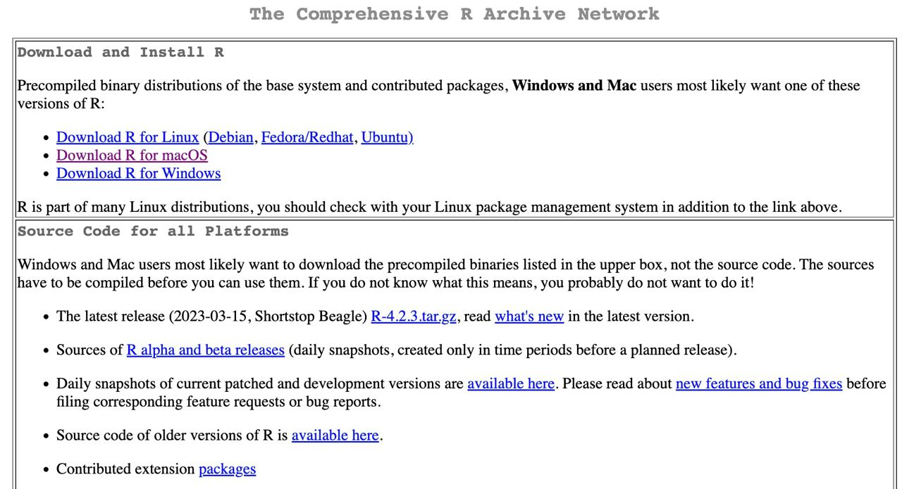
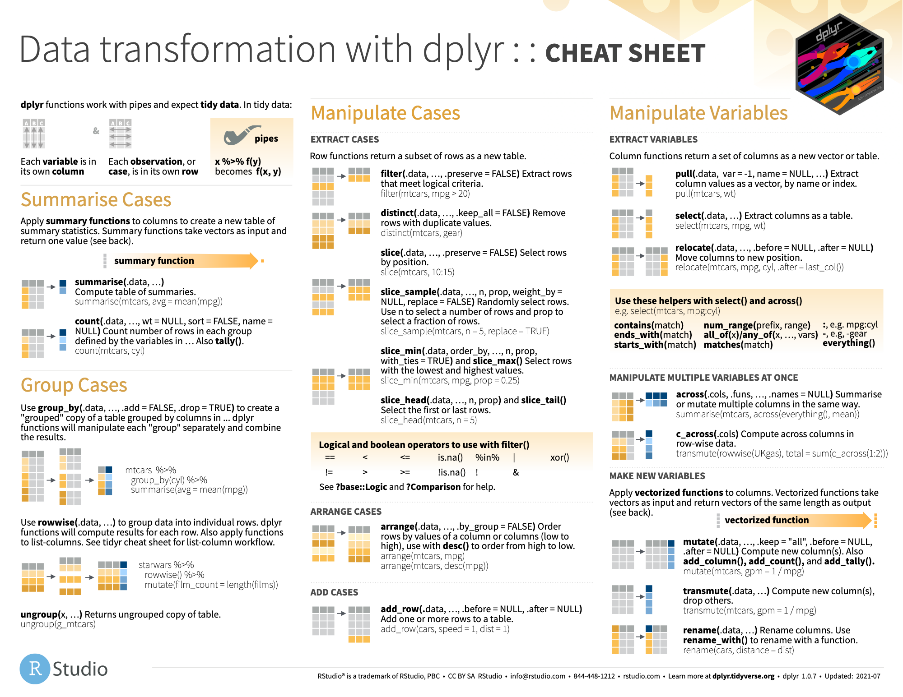
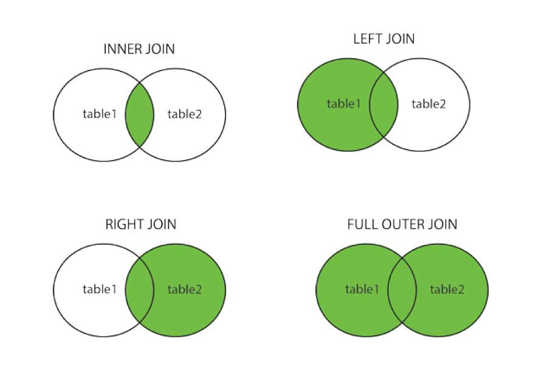

Curso de formación
Análisis de datos en R para RTVE
¡Bienvenidos de nuevo a R!
¿Me habéis echado de menos? :)
¡Buenas!
Correo: javalv09@ucm.es.

Javier Álvarez Liébana, de Carabanchel. Licenciado en Matemáticas (UCM). Doctor en estadística (UGR)
Encargado de la visualización y análisis de datos covid del Principado de Asturias (2021-2022).
Miembro de la Sociedad Española de Estadística e IO y la Real Sociedad Matemática Española.
Formador de
RISCIII (actualmente) y el Ayuntamiento de Madrid (2024).
Actualmente, investigador y docente en la Facultad de Estadística de la UCM, e investigador colaborador del Network Science Institute de la Northeastern University (Boston). Divulgando por Twitter e Instagram
Objetivos
.png)
Quitarnos el miedo a los errores en programación → a programar se aprende programando
Entender los conceptos básicos de R desde cero → aprender a abstraer ideas y algoritmos
Utilidad de programar → flujos de trabajo reproducibles, transparentes y mantenibles
Profundizar en el análisis y preprocesamiento de datos →
{tidyverse}Adquirir habilidades en el análisis estadísticos de los datos
Planificación
Materiales
- Diapositivas: diapositivas en
Quartodisponibles y actualizadas en https://javieralvarezliebana.es/cursos-R/RTVE-formacion/diapos/#/title-slide. En el menú de las diapositivas (abajo a la izquierda) tienes una opción para descargarlas en pdf enTools
Material: cuadernos de trabajo y materiales extras y resúmenes de paquetes
üóÉ Datos: datasets que usaremos a lo largo de la asignatura, disponibles en Github https://github.com/dadosdelaplace/cursos-R/tree/main/RTVE-formacion/diapos/datos
üìö Recursos de apoyo: en ingl√©s https://r4ds.had.co.nz/ y en castellano https://cdr-book.github.io/, y https://ivelasq.quarto.pub/intro-to-quarto/ para Quarto.
Clase 1: welcome to R again
Refrescando R
Reminder: ¿por qué programar?
Automatizar → te permitirá automatizar tareas recurrentes.
Replicabilidad → podrás replicar tu análisis siempre de la misma manera.
Flexibilidad → podrás adaptar el software a tus necesidades.
Transparencia → ser auditado por la comunidad.

Reminder: requisitos
Por si se te había olvidado, para el curso los únicos requisitos serán:
- Conexión a internet (para la descarga de algunos datos y paquetes).
- Instalar R: será nuestro lenguaje. La descarga la haremos (gratuitamente) desde https://cran.r-project.org/
- Instalar RStudio desde https://posit.co/download/rstudio-desktop/


Reminder: R vs RStudio


Programaremos como escribimos (castellano, por ejemplo) → R es lenguaje
- Necesitaremos una gramática, un lenguaje (
R)
- Y un entorno, por ejemplo un Word (
RStudio), para escribirlo
Reminder: asignación, ¿igual?, argumentos
No se si recuerdas que en R vamos a distinguir tres tipos de «igual»:
- Asignación: usaremos
<-para asignar el valor de la derecha a la variable cuyo nombre tenemos a la izquierda
- Comparación lógica: usaremos
==para preguntar si lo de la izquierda es igual a lo de la derecha (la respuesta será un vector lógico)
- Argumentos: usaremos
=para asignar argumentos dentro de una función
Reminder: errores y warning
Durante tu aprendizaje va a ser muy habitual que las cosas no salgan a la primera → te vas equivocar. No solo será importante asumirlo sino que es importante leer los mensajes de error para aprender de ellos.
- Mensajes de error: precedidos de «Error in…» y serán aquellos fallos que impidan la ejecución
Reminder: proyectos
De la misma manera que en el ordenador solemos trabajar de manera ordenada por carpetas, en RStudio podemos hacer lo mismo para trabajar de manera eficaz creando proyectos.
Un proyecto será una «carpeta» dentro de RStudio, de manera que nuestro directorio raíz automáticamente será la propia carpeta de proyecto (pudiendo pasar de un proyecto a otro con el menu superior derecho).
Podemos crear uno en una carpeta nueva o en una carpeta ya existente.

Reminder: tipos de datos
¿Qué tipo de dato podemos tener en cada celda de una tabla?

- Celda: dato individual de un tipo concreto.
- Variable: concatenación de valores del mismo tipo (vectores en R).
- Matriz: concatenación de variables del mismo tipo y longitud.
- Tabla: concatenación de variables de distinto tipo pero igual longitud
- Lista: concatenación de variables de distinto tipo y distinta longitud
Reminder: tipos de datos
¿Existen variables más allá de los números? Piensa por ejemplo en los datos que podrías guardar de una persona:
- A la pregunta «¿estás matriculado en la Facultad?» la respuesta será lo que llamamos una variable lógica (
TRUEsi está matriculado oFALSEen otro caso).
Reminder: tipos de datos
Imagina que además de la edad de una persona queremos guardar su nombre: ahora la variable será de tipo character
Las cadenas de texto son un tipo con el que obviamente no podremos hacer operaciones aritméticas (sí otras operaciones como pegar o localizar patrones).
Recuerda que…
Las variables de tipo texto (character o string) van SIEMPRE entre comillas: no es lo mismo TRUE (valor lógico, binario) que "TRUE" (texto).
Reminder: tipos de datos
Otro tipo fundamental serán las variables lógicas o binarias (dos valores):
TRUE: verdadero guardado internamente como un 1.FALSE: falso guardado internamente como un 0.
Reminder: tipos de datos
Las variables lógicas en realidad puede tomar un tercer valor: NA o dato ausente, representando las siglas de not available, y será muy habitual encontrarlo dentro de una base de datos.
Reminder: tipos de datos
Un tipo de datos muy especial: los datos de tipo fecha.
Parece una simple cadena de texto pero debería representar un instante en el tiempo. ¿Qué debería suceder si sumamos un 1 a una fecha?
Reminder: vectores
Cuando trabajamos con datos normalmente tendremos columnas que representan variables: llamaremos vectores a una concatenación de celdas (valores) del mismo tipo (lo que sería una columna de una tabla).
La forma más sencilla es con el comando c() (c de concatenar), y basta con introducir sus elementos entre paréntesis y separados por comas
Reminder: secuencias
El vector más famoso será el de tipo numérico, y en concreto, las conocidas como secuencias numéricas. El comando seq(inicio, fin) nos permite crear una secuencia numérica desde un elemento inicial hasta uno final, avanzando de uno en uno.
También podemos definir otro tipo de distancia (paso) entre consecutivos con el argumento by = ... o su longitud con l = ...
Reminder: vectores
Con los vectores numéricos podemos hacer las mismas operaciones aritméticas que con los números → un número es un vector (de longitud uno)
¿Qué sucederá si sumamos o restamos un valor a un vector?
Reminder: vectores
Una operación muy habitual es preguntar a los datos mediante el uso de condiciones lógicas. Por ejemplo, si definimos un vector de temperaturas…
¿Qué días hizo menos de 22 grados?
Nos devolverá un vector lógico, en función de si cada elemento cumple o no la condición pedida (de igual longitud que el vector preguntado)
Reminder: vectores
Las condiciones lógicas pueden ser combinadas de dos maneras:
- Intersección: todas las condiciones concatenadas se deben cumplir (conjunción y con
&) para devolver unTRUE
- Unión: basta con que al menos una se cumpla (conjunción o con
|)
Reminder: vectores
Otra operación muy habitual es la de acceder a elementos. La forma más sencilla es usar el operador [i] (acceder al elemento i-ésimo)
Dado que un número no es más que un vector de longitud uno, esta operación también la podemos aplicar usando un vector de índices a seleccionar
Consejo
Para acceder al último, sin preocuparnos de cuál es, podemos pasarle como índice la propia longitud x[length(x)]
Reminder: vectores
Otras veces no querremos seleccionar sino eliminar algunos elementos. Deberemos repetir la misma operación pero con el signo - delante: el operador [-i] no selecciona el elemento i-ésimo del vector sino que lo «des-selecciona»
En muchas ocasiones los queremos seleccionar o eliminar en base a condiciones lógicas, en función de los valores, así que pasaremos como índice la propia condición (recuerda, x < 2 nos devuelve un vector lógico)
Reminder: vectores
También podemos hacer uso de operaciones estadísticas como por ejemplo sum() que, dado un vector, nos devuelve la suma de todos sus elementos.
¿Qué sucede cuando falta un dato (ausente)?
Reminder: vectores
Por último, una acción habitual es saber ordenar valores:
sort(): devuelve el vector ordenado. Por defecto de menor a mayor pero condecreasing = TRUEpodemos cambiarlo
[1] 7 20 23 25 33 41 65 77 81[1] 81 77 65 41 33 25 23 20 7Reminder: bases de datos
Cuando analizamos datos solemos tener varias variables de cada individuo: necesitamos una «tabla» que las recopile.
- La opción más inmediata son las matrices: concatenación de variables del mismo tipo e igual longitud. La opción más habitual es usando
cbind(): concatenamos (bind) vectores en forma de columnas (c)
Reminder: bases de datos
Dado que ahora tenemos dos dimensiones en nuestros datos, para acceder a elementos con [] deberemos proporcionar dos índices separados por comas: índice de la fila y de la columna
Reminder: bases de datos
Las matrices tienen el mismo problema que los vectores: si juntamos datos de distinto tipo, se perturba la integridad del dato ya que los convierte
edades <- c(14, 24, NA)
soltero <- c(TRUE, NA, FALSE)
nombres <- c("javi", "laura", "lucía")
matriz <- cbind(edades, soltero, nombres)
matriz edades soltero nombres
[1,] "14" "TRUE" "javi"
[2,] "24" NA "laura"
[3,] NA "FALSE" "lucía"Para poder trabajar con variables de distinto tipo tenemos en R lo que se conoce como data.frame: concatenación de variables de igual longitud pero que pueden ser de tipo distinto.
Reminder: bases de datos
Si queremos acceder a sus elementos, al ser de nuevo datos tabulados, podemos acceder como en las matrices (no recomendable): de nuevo tenemos dos índices (filas y columnas, dejando libre la que no usemos)
edades soltero nombres
2 24 NA laura[1] "javi" "laura" "lucía"[1] 24
Pero también tiene las ventajas de una «base» de datos : podemos aceder a las variables por su nombre (lo recomendable ya que las variables pueden cambiar de posición y ahora sí tienen un significado), poniendo el nombre de la tabla seguido del símbolo $ (con el tabulador, nos aparecerá un menú de columnas a elegir)
Reminder: bases de datos
Las tablas en formato data.frame tienen algunas limitaciones. La principal es que no permite la recursividad. En adelante usaremos el formato tibble (data.frame mejorado) del paquete {tibble}
üíª Tu turno
Intenta realizar los siguientes ejercicios sin mirar las soluciones
- Ejercicio 1
- Ejercicio 2
- Ejercicio 3
- Ejercicio 4
- Ejercicio 5
- Ejercicio 6
- Ejercicio 7
- Ejercicio 8
- Ejercicio 9
- Ejercicio 10
- Ejercicio 11
- Ejercicio 12
üìù Define el vector x como la concatenaci√≥n de los 5 primeros números impares. Calcula la longitud del vector
üìù Accede al tercer elemento de x. Accede al último elemento (sin importar la longitud, un c√≥digo que pueda ejecutarse siempre). Elimina el primer elemento.
üìù Obt√©n los elementos de x mayores que 4. Calcula el vector 1/x y guárdalo en una variable.
üìù Crea un vector que represente los nombres de 5 personas, de los cuales uno es desconocido.
üìù Encuentra del vector x de ejercicios anteriores los elementos mayores (estrictos) que 1 Y ADEM√ÅS menores (estrictos) que 7. Encuentra una forma de averiguar si todos los elementos son o no positivos.
üìù Dado el vector x del ejercicio anterior, ¿cuales tienen un dato ausente? Pista: las funciones is.algo() comprueban si el elemento es tipo algo (tabula)
üìù Calcula el vector 1/x y obt√©n la versi√≥n ordenada (de menor a mayor) de las dos formas posibles
üìù Encuentra del vector x los elementos mayores (estrictos) que 1 y menores (estrictos) que 6. Encuentra una forma de averiguar si todos los elementos son o no negativos.
üìù Carga del paquete {datasets} el conjunto de datos airquality (variables de la calidad del aire de Nueva York desde mayo hasta septiembre de 1973). ¿Es el conjunto de datos airquality de tipo tibble? En caso negativo, convi√©rtelo a tibble (busca en la documentaci√≥n del paquete en https://tibble.tidyverse.org/index.html).
üìù Una vez convertido a tibble obt√©n el nombre de las variables y las dimensiones del conjunto de datos. ¿Cuántas variables hay? ¿Cuántos d√≠as se han medido?
üìù Cambia el c√≥digo inferior para filtrar solo los datos de la quinta observaci√≥n
üê£ Caso práctico I: manejo de vectores
En el paquete {datasets} (ya instalado por defecto) tenemos diversos conjuntos de datos y uno de ellos es airquality.
Los datos capturan medidas diarias (n = 153 observaciones) de la calidad del aire en Nueva York, de mayo a septiembre de 1973. Se midieron 6 variables: niveles de ozono, radiación solar, viento, temperatura, mes y día.
Intenta responder a las preguntas planteadas en el workbook
¿Qué era tidyverse?


En ese contexto de programación funcional, hace una década nacía {tidyverse}, un «universo» de paquetes para garantizar un flujo de trabajo eficiente, coherente y lexicográficamente sencillo de entender, basado en la idea de que nuestros datos están limpios y ordenados (tidy)
¿Qué era tidyverse?
{lubridate}manejo de fechas{rvest}: web scraping{tidymodels}: modelización/predicción
{tibble}: optimizando data.frame{tidyr}: limpieza de datos{readr}: carga datos rectangulares (.csv),{readxl}para importar archivos .xls y .xlsx{dplyr}: gramática para depurar{stringr}: manejo de textos{purrr}: manejo de listas{forcats}: manejo de cualitativas{ggplot2}: visualización de datos
¿Qué era tidyverse?
{lubridate}manejo de fechas{rvest}: web scraping{tidymodels}: modelización/predicción
{tibble}: optimizando data.frame{tidyr}: limpieza de datos{readr}: carga datos rectangulares (.csv),{readxl}para importar archivos .xls y .xlsx{dplyr}: gramática para depurar{stringr}: manejo de textos{purrr}: manejo de listas{forcats}: manejo de cualitativas{ggplot2}: visualización de datos
Filosofía base: tidy data
Tidy datasets are all alike, but every messy dataset is messy in its own way (Hadley Wickham, Chief Scientist en RStudio)
TIDYVERSE
El universo de paquetes {tidyverse} se basa en la idea introducida por Hadley Wickham (el Dios al que rezamos) de estandarizar el formato de los datos para
- sistematizar la depuración
- hacer más sencillo su manipulación.
- código legible
Reglas del tidy data
Lo primero por tanto será entender qué son los conjuntos tidydata ya que todo {tidyverse} se basa en que los datos están estandarizados.
- Cada variable en una única columna
- Cada individuo en una fila diferente
- Cada celda con un único valor
- Cada dataset en un tibble
- Si queremos cruzar múltiples tablas debemos tener una columna común

Tubería (pipe)
En {tidyverse} será clave el operador pipe (tubería) definido como |> (ctrl+shift+M): será una tubería que recorre los datos y los transforma.
Apunte importante
Desde la versión 4.1.0 de R disponemos de |>, un pipe nativo disponible fuera de tidyverse, sustituyendo al antiguo pipe %>% que dependía del paquete {magrittr} (bastante problemático).
Tubería (pipe)
La principal ventaja es que el código sea muy legible (casi literal) pudiendo hacer grandes operaciones con los datos con apenas código.
Datos SUCIOS: messy data
¿Pero qué aspecto tienen los datos no tidy? Vamos a cargar la tabla table4a del paquete {tidyr} (ya lo tenemos cargado del entorno tidyverse).
# A tibble: 3 × 3
country `1999` `2000`
<chr> <dbl> <dbl>
1 Afghanistan 745 2666
2 Brazil 37737 80488
3 China 212258 213766¿Qué puede estar fallando?
Pivotar: pivot_longer()
❎ Cada fila representa dos observaciones (1999 y 2000) → las columnas 1999 y 2000 en realidad deberían ser en sí valores de una variable y no nombres de columnas.
Incluiremos una nueva columna que nos guarde el año y otra que guarde el valor de la variable de interés en cada uno de esos años. Y lo haremos con la función pivot_longer(): pivotaremos la tabla a formato long:
Pivotar: pivot_longer()

cols: nombre de las variables a pivotarnames_to: nombre de la nueva variable a la quemandamos la cabecera de la tabla (los nombres).values_to: nombre de la nueva variable a la que vamos a mandar los datos.
Datos SUCIOS: messy data
Veamos otro ejemplo con la tabla table2
# A tibble: 12 × 4
country year type count
<chr> <dbl> <chr> <dbl>
1 Afghanistan 1999 cases 745
2 Afghanistan 1999 population 19987071
3 Afghanistan 2000 cases 2666
4 Afghanistan 2000 population 20595360
5 Brazil 1999 cases 37737
6 Brazil 1999 population 172006362
7 Brazil 2000 cases 80488
8 Brazil 2000 population 174504898
9 China 1999 cases 212258
10 China 1999 population 1272915272
11 China 2000 cases 213766
12 China 2000 population 1280428583¿Qué puede estar fallando?
Pivotar: pivot_wider()
# A tibble: 12 × 4
country year type count
<chr> <dbl> <chr> <dbl>
1 Afghanistan 1999 cases 745
2 Afghanistan 1999 population 19987071
3 Afghanistan 2000 cases 2666
4 Afghanistan 2000 population 20595360
5 Brazil 1999 cases 37737
6 Brazil 1999 population 172006362
7 Brazil 2000 cases 80488
8 Brazil 2000 population 174504898
9 China 1999 cases 212258
10 China 1999 population 1272915272
11 China 2000 cases 213766
12 China 2000 population 1280428583❎ Cada observación está dividido en dos filas → los registros con el mismo año deberían ser el mismo
Lo que haremos será lo opuesto: con pivot_wider() ensancharemos la tabla
# A tibble: 6 × 4
country year cases population
<chr> <dbl> <dbl> <dbl>
1 Afghanistan 1999 745 19987071
2 Afghanistan 2000 2666 20595360
3 Brazil 1999 37737 172006362
4 Brazil 2000 80488 174504898
5 China 1999 212258 1272915272
6 China 2000 213766 1280428583Datos SUCIOS: messy data
Veamos otro ejemplo con la tabla table3
# A tibble: 6 × 3
country year rate
<chr> <dbl> <chr>
1 Afghanistan 1999 745/19987071
2 Afghanistan 2000 2666/20595360
3 Brazil 1999 37737/172006362
4 Brazil 2000 80488/174504898
5 China 1999 212258/1272915272
6 China 2000 213766/1280428583¿Qué puede estar fallando?
Separar: separate()
❎ Cada celda contiene varios valores
Lo que haremos será hacer uso de la función separate() para mandar separar cada valor a una columna diferente.
# A tibble: 6 × 4
country year cases pop
<chr> <dbl> <chr> <chr>
1 Afghanistan 1999 745 19987071
2 Afghanistan 2000 2666 20595360
3 Brazil 1999 37737 172006362
4 Brazil 2000 80488 174504898
5 China 1999 212258 1272915272
6 China 2000 213766 1280428583Separar: separate()
# A tibble: 6 × 4
country year cases pop
<chr> <dbl> <chr> <chr>
1 Afghanistan 1999 745 19987071
2 Afghanistan 2000 2666 20595360
3 Brazil 1999 37737 172006362
4 Brazil 2000 80488 174504898
5 China 1999 212258 1272915272
6 China 2000 213766 1280428583Fíjate que los datos, aunque los ha separado, los ha mantenido como texto cuando en realidad deberían ser variables numéricas. Para ello podemos añadir el argumento opcional convert = TRUE
# A tibble: 6 × 4
country year cases pop
<chr> <dbl> <int> <int>
1 Afghanistan 1999 745 19987071
2 Afghanistan 2000 2666 20595360
3 Brazil 1999 37737 172006362
4 Brazil 2000 80488 174504898
5 China 1999 212258 1272915272
6 China 2000 213766 1280428583Datos SUCIOS: messy data
Veamos el último ejemplo con la tabla table5
# A tibble: 6 × 4
country century year rate
<chr> <chr> <chr> <chr>
1 Afghanistan 19 99 745/19987071
2 Afghanistan 20 00 2666/20595360
3 Brazil 19 99 37737/172006362
4 Brazil 20 00 80488/174504898
5 China 19 99 212258/1272915272
6 China 20 00 213766/1280428583¿Qué puede estar fallando?
Unir unite()
❎ Tenemos mismos valores divididos en dos columnas
Usaremos unite() para unir los valores de siglo y año en una misma columna
# A tibble: 6 × 3
country year_completo rate
<chr> <chr> <chr>
1 Afghanistan 1999 745/19987071
2 Afghanistan 2000 2666/20595360
3 Brazil 1999 37737/172006362
4 Brazil 2000 80488/174504898
5 China 1999 212258/1272915272
6 China 2000 213766/1280428583Ejemplo: relig_income
Vamos a realizar un ejemplo juntos con la tabla relig_income del paquete {tidyr}. Como se indica en la ayuda ? relig_income, la tabla representa la cantidad de personas que hay en cada tramo de ingresos anuales (20k = 20 000$) y en cada religión.
# A tibble: 18 × 11
religion `<$10k` `$10-20k` `$20-30k` `$30-40k` `$40-50k` `$50-75k` `$75-100k`
<chr> <dbl> <dbl> <dbl> <dbl> <dbl> <dbl> <dbl>
1 Agnostic 27 34 60 81 76 137 122
2 Atheist 12 27 37 52 35 70 73
3 Buddhist 27 21 30 34 33 58 62
4 Catholic 418 617 732 670 638 1116 949
5 Don’t k… 15 14 15 11 10 35 21
6 Evangel… 575 869 1064 982 881 1486 949
7 Hindu 1 9 7 9 11 34 47
8 Histori… 228 244 236 238 197 223 131
9 Jehovah… 20 27 24 24 21 30 15
10 Jewish 19 19 25 25 30 95 69
11 Mainlin… 289 495 619 655 651 1107 939
12 Mormon 29 40 48 51 56 112 85
13 Muslim 6 7 9 10 9 23 16
14 Orthodox 13 17 23 32 32 47 38
15 Other C… 9 7 11 13 13 14 18
16 Other F… 20 33 40 46 49 63 46
17 Other W… 5 2 3 4 2 7 3
18 Unaffil… 217 299 374 365 341 528 407
# ℹ 3 more variables: `$100-150k` <dbl>, `>150k` <dbl>,
# `Don't know/refused` <dbl>Ejemplo: relig_income
# A tibble: 18 × 11
religion `<$10k` `$10-20k` `$20-30k` `$30-40k` `$40-50k` `$50-75k` `$75-100k`
<chr> <dbl> <dbl> <dbl> <dbl> <dbl> <dbl> <dbl>
1 Agnostic 27 34 60 81 76 137 122
2 Atheist 12 27 37 52 35 70 73
3 Buddhist 27 21 30 34 33 58 62
4 Catholic 418 617 732 670 638 1116 949
5 Don’t k… 15 14 15 11 10 35 21
6 Evangel… 575 869 1064 982 881 1486 949
7 Hindu 1 9 7 9 11 34 47
8 Histori… 228 244 236 238 197 223 131
9 Jehovah… 20 27 24 24 21 30 15
10 Jewish 19 19 25 25 30 95 69
11 Mainlin… 289 495 619 655 651 1107 939
12 Mormon 29 40 48 51 56 112 85
13 Muslim 6 7 9 10 9 23 16
14 Orthodox 13 17 23 32 32 47 38
15 Other C… 9 7 11 13 13 14 18
16 Other F… 20 33 40 46 49 63 46
17 Other W… 5 2 3 4 2 7 3
18 Unaffil… 217 299 374 365 341 528 407
# ℹ 3 more variables: `$100-150k` <dbl>, `>150k` <dbl>,
# `Don't know/refused` <dbl>¿Es tidydata?
Ejemplo: relig_income
# A tibble: 18 × 11
religion `<$10k` `$10-20k` `$20-30k` `$30-40k` `$40-50k` `$50-75k` `$75-100k`
<chr> <dbl> <dbl> <dbl> <dbl> <dbl> <dbl> <dbl>
1 Agnostic 27 34 60 81 76 137 122
2 Atheist 12 27 37 52 35 70 73
3 Buddhist 27 21 30 34 33 58 62
4 Catholic 418 617 732 670 638 1116 949
5 Don’t k… 15 14 15 11 10 35 21
6 Evangel… 575 869 1064 982 881 1486 949
7 Hindu 1 9 7 9 11 34 47
8 Histori… 228 244 236 238 197 223 131
9 Jehovah… 20 27 24 24 21 30 15
10 Jewish 19 19 25 25 30 95 69
11 Mainlin… 289 495 619 655 651 1107 939
12 Mormon 29 40 48 51 56 112 85
13 Muslim 6 7 9 10 9 23 16
14 Orthodox 13 17 23 32 32 47 38
15 Other C… 9 7 11 13 13 14 18
16 Other F… 20 33 40 46 49 63 46
17 Other W… 5 2 3 4 2 7 3
18 Unaffil… 217 299 374 365 341 528 407
# ℹ 3 more variables: `$100-150k` <dbl>, `>150k` <dbl>,
# `Don't know/refused` <dbl>No lo es ya que en realidad solo deberíamos tener una variable de ingresos y la tenemos dividida en 11: todas ellas es la misma variable solo que adopta un valor diferente. ¿Cómo convertirla a tidy data?
Ejemplo: relig_income
La idea es pivotar todas las columnas de ingresos para que acaben en una sola columna llamada income, y los valores (el número de personas) en otra llamada people (por ejemplo). La tabla la haremos más larga y menos ancha así que…
relig_tidy <-
relig_income |>
pivot_longer(cols = "<$10k":"Don't know/refused", names_to = "income",
values_to = "people")
relig_tidy # A tibble: 180 × 3
religion income people
<chr> <chr> <dbl>
1 Agnostic <$10k 27
2 Agnostic $10-20k 34
3 Agnostic $20-30k 60
4 Agnostic $30-40k 81
5 Agnostic $40-50k 76
6 Agnostic $50-75k 137
7 Agnostic $75-100k 122
8 Agnostic $100-150k 109
9 Agnostic >150k 84
10 Agnostic Don't know/refused 96
# ℹ 170 more rowsEjemplo: relig_income
Vamos a hilar más fino: ahora mismo en la variable income en realidad tenemos dos valores, el límite inferior y el superior de la renta. Vamos a separar dicha variable e ingresos en dos, llamadas income_inf y income_sup
Código
# A tibble: 180 × 4
religion income_inf income_sup people
<chr> <chr> <chr> <dbl>
1 Agnostic <$10k <NA> 27
2 Agnostic $10 20k 34
3 Agnostic $20 30k 60
4 Agnostic $30 40k 81
5 Agnostic $40 50k 76
6 Agnostic $50 75k 137
7 Agnostic $75 100k 122
8 Agnostic $100 150k 109
9 Agnostic >150k <NA> 84
10 Agnostic Don't know/refused <NA> 96
# ℹ 170 more rows¿Está ya ok? Fíjate bien…
Ejemplo: relig_income
Si te fijas la primera columna el "$10k" debería ser una cota superior, no inferior. ¿Cómo indicarle que separe bien ese caso?
Ejemplo: relig_income
Piensa ahora como podemos convertir los límites de ingresos a numéricas (eliminando símbolos, letras, etc)
Para ello usaremos el paquete {stringr}, en concreto la función str_remove_all() a la que le podemos pasar los caracteres que queremos eliminar (fíjate que $ al ser un caracter reservado en R hay que indicárselo con \\$)
Código
# A tibble: 180 × 4
religion income_inf income_sup people
<chr> <chr> <chr> <dbl>
1 Agnostic "" 10 27
2 Agnostic "10" 20 34
3 Agnostic "20" 30 60
4 Agnostic "30" 40 81
5 Agnostic "40" 50 76
6 Agnostic "50" 75 137
7 Agnostic "75" 100 122
8 Agnostic "100" 150 109
9 Agnostic "150" <NA> 84
10 Agnostic "Don't now/refused" <NA> 96
# ℹ 170 more rowsüíª Tu turno
Intenta realizar los siguientes ejercicios sin mirar las soluciones
üìù Echa un vistazo a la tabla table4b del paquete {tidyr}. ¿Es tidydata? En caso negativo, ¿qu√© falla? ¿C√≥mo convertirla a tidy data en caso de que no lo sea ya?
üìù Echa un vistazo a la tabla billboard del paquete {tidyr}. ¿Es tidydata? En caso negativo, ¿qu√© falla? ¿C√≥mo convertirla a tidy data en caso de que no lo sea ya?
üìù En el paquete {tidyr} contamos con el dataset who2 (dataset de la Organizaci√≥n Mundial de la Salud). ¿Es tidy data? ¿Por qu√©? Convierte a tidy data
Código
# A tibble: 76,046 × 4
country year type cases
<chr> <dbl> <chr> <dbl>
1 Afghanistan 1997 sp_m_014 0
2 Afghanistan 1997 sp_m_1524 10
3 Afghanistan 1997 sp_m_2534 6
4 Afghanistan 1997 sp_m_3544 3
5 Afghanistan 1997 sp_m_4554 5
6 Afghanistan 1997 sp_m_5564 2
7 Afghanistan 1997 sp_m_65 0
8 Afghanistan 1997 sp_f_014 5
9 Afghanistan 1997 sp_f_1524 38
10 Afghanistan 1997 sp_f_2534 36
# ℹ 76,036 more rowsüìù Si te fijas ahora en type tenemos codificada la informaci√≥n como diagnosis_sexo_edad. ¿C√≥mo separarlo en 3 columnas? Investiga tanto separate() como las opciones de pivot_longer()
Código
# A tibble: 76,046 × 6
country year diagnosis sex age cases
<chr> <dbl> <chr> <chr> <chr> <dbl>
1 Afghanistan 1997 sp m 014 0
2 Afghanistan 1997 sp m 1524 10
3 Afghanistan 1997 sp m 2534 6
4 Afghanistan 1997 sp m 3544 3
5 Afghanistan 1997 sp m 4554 5
6 Afghanistan 1997 sp m 5564 2
7 Afghanistan 1997 sp m 65 0
8 Afghanistan 1997 sp f 014 5
9 Afghanistan 1997 sp f 1524 38
10 Afghanistan 1997 sp f 2534 36
# ℹ 76,036 more rowsüìù Por último, separa en dos (age_inf, age_sup) el tramo etario (que sean números). Piensa c√≥mo hacerlo ya que no siempre son 4 números
üê£ Caso práctico II: tidydata
En el fichero messy_covid_data.csv tienes un archivo con la cantidad de casos reportados durante la pandemia covid pero en formato messy: el nombre de las columnas codifica el sexo (H hombre, M mujer, NC no consta) y el grupo etario (0-9, 10-19, 20-29, 30-39, 40-49, 50-59, 60-69, 70-79, ≥80 años y NC no consta). Las soluciones serán asumiendo que no se conoce aún las opciones de tidyverse para modificar y filtrar tablas.
Intenta responder a las preguntas planteadas en el workbook
Preprocesamiento: dplyr
Como vimos dentro de {tidyverse} tenemos el paquete {dplyr} para el preprocesamiento y depuración de los datos.

La idea es que el código sea legible, como si fuese una lista de instrucciones que al leerla nos diga de manera muy evidente lo que está haciendo.
Preprocesamiento: dplyr
Vamos a repasar con el dataset accidentes2020_data del paquete {CDR} que recopila los datos de accidentes de tráfico con víctimas y/o daños al patrimonio en la ciudad de Madrid registrados por la Policía Municipal durante 2020.
# A tibble: 32,427 × 17
num_expediente fecha hora localizacion numero distrito tipo_accidente
<chr> <chr> <chr> <chr> <chr> <chr> <chr>
1 2019S040008 07/09/2020 23:00:… CALL. SAN M… 38 CIUDAD … Choque contra…
2 2019S040008 07/09/2020 23:00:… CALL. SAN M… 38 CIUDAD … Choque contra…
3 2020S000001 01/01/2020 1:15:00 AVDA. CANIL… 1 SAN BLA… Colisión fron…
4 2020S000001 01/01/2020 1:15:00 AVDA. CANIL… 1 SAN BLA… Colisión fron…
5 2020S000002 01/01/2020 1:20:00 CALL. SILVA… 31 HORTALE… Choque contra…
6 2020S000002 01/01/2020 1:20:00 CALL. SILVA… 31 HORTALE… Choque contra…
7 2020S000003 01/01/2020 2:00:00 CALL. BRAVO… 1 CHAMBERÍ Alcance
8 2020S000003 01/01/2020 2:00:00 CALL. BRAVO… 1 CHAMBERÍ Alcance
9 2020S000003 01/01/2020 2:00:00 CALL. BRAVO… 1 CHAMBERÍ Alcance
10 2020S000004 01/01/2020 1:00:00 CALL. MANDA… 5 CIUDAD … Choque contra…
# ℹ 32,417 more rows
# ℹ 10 more variables: estado_meteorológico <chr>, tipo_vehiculo <chr>,
# tipo_persona <chr>, rango_edad <chr>, sexo <chr>, lesividad <chr>,
# coordenada_x_utm <dbl>, coordenada_y_utm <dbl>, positiva_alcohol <chr>,
# positiva_droga <chr>Muestreo
Una de las operaciones más comunes es lo que se conoce en estadística como muestreo: una selección o filtrado de registros (una submuestra)

- No aleatorio (por cuotas): en base a condiciones lógicas sobre los registros (
filter())
- No aleatorio (intencional/discreccional): en base a posición (
slice())
- Aleatorio simple (
slice_sample())
- Aleatorio estratificado (
group_by()+slice_sample())
Filtrar filas: filter()
El muestreo más simple es cuando filtramos registros en base a alguna condición lógica: con filter() se seleccionarán solo individuos que cumplan ciertas condiciones
¿Cuáles son los accidentes que se produjeron en Carabanchel?
# A tibble: 2,076 × 17
num_expediente fecha hora localizacion numero distrito tipo_accidente
<chr> <chr> <chr> <chr> <chr> <chr> <chr>
1 2020S000006 01/01/2020 5:05:00 CALL. EUGEN… 60 CARABAN… Colisión late…
2 2020S000006 01/01/2020 5:05:00 CALL. EUGEN… 60 CARABAN… Colisión late…
3 2020S000006 01/01/2020 5:05:00 CALL. EUGEN… 60 CARABAN… Colisión late…
4 2020S000006 01/01/2020 5:05:00 CALL. EUGEN… 60 CARABAN… Colisión late…
5 2020S000020 01/01/2020 9:15:00 CALL. PARAD… 27 CARABAN… Colisión fron…
6 2020S000020 01/01/2020 9:15:00 CALL. PARAD… 27 CARABAN… Colisión fron…
7 2020S000020 01/01/2020 9:15:00 CALL. PARAD… 27 CARABAN… Colisión fron…
8 2020S000035 01/01/2020 19:30:… CALL. ANTON… 3 CARABAN… Colisión fron…
9 2020S000035 01/01/2020 19:30:… CALL. ANTON… 3 CARABAN… Colisión fron…
10 2020S000078 02/01/2020 19:30:… AVDA. CARAB… 154 CARABAN… Atropello a p…
# ℹ 2,066 more rows
# ℹ 10 more variables: estado_meteorológico <chr>, tipo_vehiculo <chr>,
# tipo_persona <chr>, rango_edad <chr>, sexo <chr>, lesividad <chr>,
# coordenada_x_utm <dbl>, coordenada_y_utm <dbl>, positiva_alcohol <chr>,
# positiva_droga <chr>Filtrar filas: filter()
¿Cuáles fueron los accidentes ocurridos el 31 de diciembre?
# A tibble: 122 × 17
num_expediente fecha hora localizacion numero distrito tipo_accidente
<chr> <chr> <chr> <chr> <chr> <chr> <chr>
1 2020S019461 31/12/2020 0:50:00 CALL. DOCTO… 197 RETIRO Caída
2 2020S019465 31/12/2020 1:15:00 AVDA. PRINC… 1 USERA Alcance
3 2020S019465 31/12/2020 1:15:00 AVDA. PRINC… 1 USERA Alcance
4 2020S019465 31/12/2020 1:15:00 AVDA. PRINC… 1 USERA Alcance
5 2020S019466 31/12/2020 2:55:00 CALL. JORGE… 83 SALAMAN… Caída
6 2020S019477 31/12/2020 11:25:… CALL. VALLE… 106 CHAMBERÍ Colisión fron…
7 2020S019477 31/12/2020 11:25:… CALL. VALLE… 106 CHAMBERÍ Colisión fron…
8 2020S019481 31/12/2020 13:20:… CALL. MATIL… 27 CARABAN… Colisión fron…
9 2020S019481 31/12/2020 13:20:… CALL. MATIL… 27 CARABAN… Colisión fron…
10 2020S019483 31/12/2020 13:20:… AVDA. ILUST… 0 FUENCAR… Alcance
# ℹ 112 more rows
# ℹ 10 more variables: estado_meteorológico <chr>, tipo_vehiculo <chr>,
# tipo_persona <chr>, rango_edad <chr>, sexo <chr>, lesividad <chr>,
# coordenada_x_utm <dbl>, coordenada_y_utm <dbl>, positiva_alcohol <chr>,
# positiva_droga <chr>Filtrar filas: filter()
¿Cuáles fueron los accidentes ocurridos en diciembre en el que hay mujeres conductoras involucradas?
accidentes_tb |>
filter(month(as_date(fecha, format = "%d/%m/%Y")) == 12 &
tipo_persona == "Conductor" & sexo == "Mujer")# A tibble: 653 × 17
num_expediente fecha hora localizacion numero distrito tipo_accidente
<chr> <chr> <chr> <chr> <chr> <chr> <chr>
1 2020S017403 01/12/2020 9:40:00 CALL. CARTA… 88 SALAMAN… Colisión múlt…
2 2020S017423 01/12/2020 15:05:… CALL. JUAN … 61 SALAMAN… Alcance
3 2020S017437 01/12/2020 15:30:… CTRA. VILLA… 269 VILLA D… Alcance
4 2020S017441 01/12/2020 16:10:… AUTOV. M-30… +0080… MORATAL… Alcance
5 2020S017441 01/12/2020 16:10:… AUTOV. M-30… +0080… MORATAL… Alcance
6 2020S017445 01/12/2020 19:39:… CALL. ROBER… 1D SALAMAN… Atropello a p…
7 2020S017446 01/12/2020 15:40:… AVDA. MEDIT… 50 RETIRO Colisión late…
8 2020S017448 01/12/2020 18:15:… CALL. GOYA,… 129 SALAMAN… Choque contra…
9 2020S017454 01/12/2020 21:43:… AUTOV. M-30… +0090… RETIRO Alcance
10 2020S017455 01/12/2020 23:30:… AVDA. ENTRE… 2 PUENTE … Colisión fron…
# ℹ 643 more rows
# ℹ 10 more variables: estado_meteorológico <chr>, tipo_vehiculo <chr>,
# tipo_persona <chr>, rango_edad <chr>, sexo <chr>, lesividad <chr>,
# coordenada_x_utm <dbl>, coordenada_y_utm <dbl>, positiva_alcohol <chr>,
# positiva_droga <chr>Filtrar filas: filter()
¿Cuáles fueron los accidentes cuando hubo granizo, lluvia (intensa o débil) o nieve?
accidentes_tb |>
filter(estado_meteorológico %in%
c("Granizando", "LLuvia intensa", "Lluvia débil", "Nevando"))# A tibble: 2,259 × 17
num_expediente fecha hora localizacion numero distrito tipo_accidente
<chr> <chr> <chr> <chr> <chr> <chr> <chr>
1 2020S000071 02/01/2020 17:15:… AVDA. PALOM… 60B PUENTE … Colisión fron…
2 2020S000071 02/01/2020 17:15:… AVDA. PALOM… 60B PUENTE … Colisión fron…
3 2020S000395 08/01/2020 17:30:… CTRA. VILLA… 267 VILLA D… Colisión late…
4 2020S000395 08/01/2020 17:30:… CTRA. VILLA… 267 VILLA D… Colisión late…
5 2020S000395 08/01/2020 17:30:… CTRA. VILLA… 267 VILLA D… Colisión late…
6 2020S000395 08/01/2020 17:30:… CTRA. VILLA… 267 VILLA D… Colisión late…
7 2020S001220 18/01/2020 6:55:00 PASEO. CAST… 79 TETUÁN Atropello a p…
8 2020S001220 18/01/2020 6:55:00 PASEO. CAST… 79 TETUÁN Atropello a p…
9 2020S001228 18/01/2020 8:15:00 AUTOV. A-3,… +0060… MORATAL… Solo salida d…
10 2020S001231 18/01/2020 8:50:00 AUTOV. M-30… +0300… FUENCAR… Choque contra…
# ℹ 2,249 more rows
# ℹ 10 more variables: estado_meteorológico <chr>, tipo_vehiculo <chr>,
# tipo_persona <chr>, rango_edad <chr>, sexo <chr>, lesividad <chr>,
# coordenada_x_utm <dbl>, coordenada_y_utm <dbl>, positiva_alcohol <chr>,
# positiva_droga <chr>Filtrar filas: filter()
¿Cuáles fueron los accidentes cuya lesividad se sitúa entre 1 y 3 (ambos inclusive)?
# A tibble: 2,622 × 17
num_expediente fecha hora localizacion numero distrito tipo_accidente
<chr> <chr> <chr> <chr> <chr> <chr> <chr>
1 2020S000007 01/01/2020 6:13:00 CALL. BOCAN… 18 SALAMAN… Colisión fron…
2 2020S000030 01/01/2020 16:30:… AVDA. SAN D… 2 PUENTE … Colisión fron…
3 2020S000030 01/01/2020 16:30:… AVDA. SAN D… 2 PUENTE … Colisión fron…
4 2020S000030 01/01/2020 16:30:… AVDA. SAN D… 2 PUENTE … Colisión fron…
5 2020S000035 01/01/2020 19:30:… CALL. ANTON… 3 CARABAN… Colisión fron…
6 2020S000042 02/01/2020 5:00:00 AVDA. PABLO… 110 PUENTE … Colisión fron…
7 2020S000042 02/01/2020 5:00:00 AVDA. PABLO… 110 PUENTE … Colisión fron…
8 2020S000043 01/01/2020 14:14:… AUTOV. M-30… +0120… PUENTE … Alcance
9 2020S000055 02/01/2020 12:30:… CALL. SAGAS… 32 CENTRO Colisión late…
10 2020S000064 02/01/2020 16:35:… PASEO. PONT… 22A ARGANZU… Colisión late…
# ℹ 2,612 more rows
# ℹ 10 more variables: estado_meteorológico <chr>, tipo_vehiculo <chr>,
# tipo_persona <chr>, rango_edad <chr>, sexo <chr>, lesividad <chr>,
# coordenada_x_utm <dbl>, coordenada_y_utm <dbl>, positiva_alcohol <chr>,
# positiva_droga <chr>Filtrar filas: filter()
Las condiciones lógicas las podemos combinar de diferentes maneras (y, o, o excluyente)

Importante
Recuerda que dentro de filter() debe ir siempre algo que devuelva un vector de valores lógicos.
Eliminar ausentes
¿Cuáles fueron los accidentes en los que el sexo de la persona involucrada es desconocido?
Los ausentes deberían estar codificados como NA, y usar drop_na() para depurarlos, pero no siempre van a estar ya codificados así.
# A tibble: 3,806 × 17
num_expediente fecha hora localizacion numero distrito tipo_accidente
<chr> <chr> <chr> <chr> <chr> <chr> <chr>
1 2020S000004 01/01/2020 1:00:00 CALL. MANDA… 5 CIUDAD … Choque contra…
2 2020S000004 01/01/2020 1:00:00 CALL. MANDA… 5 CIUDAD … Choque contra…
3 2020S000005 01/01/2020 3:30:00 CALL. TUDES… 1 CENTRO Colisión late…
4 2020S000012 01/01/2020 6:40:00 AVDA. MEDIT… 10 RETIRO Alcance
5 2020S000021 01/01/2020 9:30:00 CALL. LUIS … 2 PUENTE … Choque contra…
6 2020S000032 01/01/2020 14:22:… CALL. ALFON… 1 PUENTE … Colisión late…
7 2020S000033 01/01/2020 19:45:… CALL. OLIVA… 40 CENTRO Choque contra…
8 2020S000035 01/01/2020 19:30:… CALL. ANTON… 3 CARABAN… Colisión fron…
9 2020S000039 02/01/2020 2:20:00 CALL. EJE 7… 1 VILLA D… Choque contra…
10 2020S000039 02/01/2020 2:20:00 CALL. EJE 7… 1 VILLA D… Choque contra…
# ℹ 3,796 more rows
# ℹ 10 more variables: estado_meteorológico <chr>, tipo_vehiculo <chr>,
# tipo_persona <chr>, rango_edad <chr>, sexo <chr>, lesividad <chr>,
# coordenada_x_utm <dbl>, coordenada_y_utm <dbl>, positiva_alcohol <chr>,
# positiva_droga <chr>Rebanadas de datos: slice()
A veces nos puede interesar realizar un muestreo no aleatorio discreccional, o lo que es lo mismo, filtrar por posición: con slice(posiciones) podremos seleccionar filas concretas pasando como argumento un vector de índices
¿Cuáles son los 7 primeros accidentes guardados en la base de datos?
# A tibble: 7 × 17
num_expediente fecha hora localizacion numero distrito tipo_accidente
<chr> <chr> <chr> <chr> <chr> <chr> <chr>
1 2019S040008 07/09/2020 23:00:00 CALL. SAN M… 38 CIUDAD … Choque contra…
2 2019S040008 07/09/2020 23:00:00 CALL. SAN M… 38 CIUDAD … Choque contra…
3 2020S000001 01/01/2020 1:15:00 AVDA. CANIL… 1 SAN BLA… Colisión fron…
4 2020S000001 01/01/2020 1:15:00 AVDA. CANIL… 1 SAN BLA… Colisión fron…
5 2020S000002 01/01/2020 1:20:00 CALL. SILVA… 31 HORTALE… Choque contra…
6 2020S000002 01/01/2020 1:20:00 CALL. SILVA… 31 HORTALE… Choque contra…
7 2020S000003 01/01/2020 2:00:00 CALL. BRAVO… 1 CHAMBERÍ Alcance
# ℹ 10 more variables: estado_meteorológico <chr>, tipo_vehiculo <chr>,
# tipo_persona <chr>, rango_edad <chr>, sexo <chr>, lesividad <chr>,
# coordenada_x_utm <dbl>, coordenada_y_utm <dbl>, positiva_alcohol <chr>,
# positiva_droga <chr>Rebanadas de datos: slice()
¿Cuáles fueron los primeros 100 accidentes del año (usando fecha y hora)?
# A tibble: 100 × 17
num_expediente fecha hora localizacion numero distrito tipo_accidente
<chr> <chr> <chr> <chr> <chr> <chr> <chr>
1 2020S000004 01/01/2020 1:00:00 CALL. MANDA… 5 CIUDAD … Choque contra…
2 2020S000004 01/01/2020 1:00:00 CALL. MANDA… 5 CIUDAD … Choque contra…
3 2020S000004 01/01/2020 1:00:00 CALL. MANDA… 5 CIUDAD … Choque contra…
4 2020S000014 01/01/2020 1:00:00 PLAZA. CIBE… 1 RETIRO Colisión fron…
5 2020S000014 01/01/2020 1:00:00 PLAZA. CIBE… 1 RETIRO Colisión fron…
6 2020S000001 01/01/2020 1:15:00 AVDA. CANIL… 1 SAN BLA… Colisión fron…
7 2020S000001 01/01/2020 1:15:00 AVDA. CANIL… 1 SAN BLA… Colisión fron…
8 2020S000002 01/01/2020 1:20:00 CALL. SILVA… 31 HORTALE… Choque contra…
9 2020S000002 01/01/2020 1:20:00 CALL. SILVA… 31 HORTALE… Choque contra…
10 2020S000037 01/01/2020 1:55:00 AVDA. OROVI… 32 VILLAVE… Colisión fron…
# ℹ 90 more rows
# ℹ 10 more variables: estado_meteorológico <chr>, tipo_vehiculo <chr>,
# tipo_persona <chr>, rango_edad <chr>, sexo <chr>, lesividad <chr>,
# coordenada_x_utm <dbl>, coordenada_y_utm <dbl>, positiva_alcohol <chr>,
# positiva_droga <chr>Rebanadas de datos: slice()
¿Cuáles fue el último accidente del año (usando fecha y hora)?
# A tibble: 1 × 17
num_expediente fecha hora localizacion numero distrito tipo_accidente
<chr> <chr> <chr> <chr> <chr> <chr> <chr>
1 2020S019515 31/12/2020 22:30:00 CTRA. VICAL… 14 PUENTE … Choque contra…
# ℹ 10 more variables: estado_meteorológico <chr>, tipo_vehiculo <chr>,
# tipo_persona <chr>, rango_edad <chr>, sexo <chr>, lesividad <chr>,
# coordenada_x_utm <dbl>, coordenada_y_utm <dbl>, positiva_alcohol <chr>,
# positiva_droga <chr>Aleatorio: slice_sample()
El conocido como muestreo aleatorio simple se basa en seleccionar individuos aleatoriamente, de forma que cada uno tenga ciertas probabilidades de ser seleccionado. Con slice_sample(n = ...) o slice_sample(prop = ...) podemos extraer n registros aleatoriamente (a priori equiprobables).
Extrae el 10% de la muestra de manera aleatoria
# A tibble: 3,242 × 17
num_expediente fecha hora localizacion numero distrito tipo_accidente
<chr> <chr> <chr> <chr> <chr> <chr> <chr>
1 2020S000739 12/01/2020 1:00:00 AVDA. RAMON… 2 CHAMART… Colisión fron…
2 2020S009861 15/07/2020 17:15:… AVDA. ENTRE… 2 PUENTE … Choque contra…
3 2020S006770 12/05/2020 14:45:… CALL. VIA C… 190 LATINA Colisión fron…
4 2020S017885 07/12/2020 19:30:… CALL. CARTA… 120 CHAMART… Colisión fron…
5 2020S003415 13/02/2020 12:00:… CALL. SANTI… 88 FUENCAR… Alcance
6 2020S009186 02/07/2020 11:53:… CALL. SEGOV… 10 CENTRO Colisión fron…
7 2020S010597 29/07/2020 16:57:… CALL. CORRE… 10 MORATAL… Alcance
8 2020S012452 11/09/2020 17:30:… CALL. EDGAR… 27 TETUÁN Choque contra…
9 2020S008993 29/06/2020 0:23:00 CALL. BOYER… 1 VICÁLVA… Colisión late…
10 2020S018729 19/12/2020 1:57:00 AVDA. GREGO… 1 MONCLOA… Otro
# ℹ 3,232 more rows
# ℹ 10 more variables: estado_meteorológico <chr>, tipo_vehiculo <chr>,
# tipo_persona <chr>, rango_edad <chr>, sexo <chr>, lesividad <chr>,
# coordenada_x_utm <dbl>, coordenada_y_utm <dbl>, positiva_alcohol <chr>,
# positiva_droga <chr>Aleatorio: slice_sample()
Importante…
«Aleatorio» no implica equiprobable: es igual de aleatorio un dado normal que uno trucado. No hay cosas «más aleatorias» que otras, simplemente tienen subyacente distintas leyes de probabilidad.
Extrae el 10% de la muestra de manera aleatoria pero siendo más probable de muestrear a los accidentes en los primeros días de mes
# A tibble: 3,242 × 17
num_expediente fecha hora localizacion numero distrito tipo_accidente
<chr> <chr> <chr> <chr> <chr> <chr> <chr>
1 2020S011641 24/08/2020 4:35:00 AUTOV. M-30… +0100… RETIRO Choque contra…
2 2020S017714 04/12/2020 22:20:… PASEO. CAST… 109 TETUÁN Alcance
3 2020S006601 06/05/2020 16:30:… CALL. LAGAS… 25 SALAMAN… Colisión fron…
4 2020S016996 23/11/2020 20:45:… CALL. MENDE… 44 ARGANZU… Colisión late…
5 2020S013466 28/09/2020 15:30:… CALL. FUENT… 61 MORATAL… Alcance
6 2020S007440 28/05/2020 11:50:… CALL. BALAG… 10 HORTALE… Atropello a p…
7 2020S005753 23/03/2020 15:30:… CALL. BERRU… 26 TETUÁN Atropello a p…
8 2020S013914 06/10/2020 14:00:… PLAZA. TIRS… 16 CENTRO Atropello a p…
9 2020S007529 30/05/2020 16:50:… CTRA. LA MU… 22 BARAJAS Choque contra…
10 2020S012920 19/09/2020 15:30:… CALL. VIA L… 25 CARABAN… Colisión fron…
# ℹ 3,232 more rows
# ℹ 10 more variables: estado_meteorológico <chr>, tipo_vehiculo <chr>,
# tipo_persona <chr>, rango_edad <chr>, sexo <chr>, lesividad <chr>,
# coordenada_x_utm <dbl>, coordenada_y_utm <dbl>, positiva_alcohol <chr>,
# positiva_droga <chr>Reordenar filas: arrange()
También podemos ordenar filas en función de alguna variable con arrange()
Ordena los accidentes por fecha
# A tibble: 32,427 × 17
num_expediente fecha hora localizacion numero distrito tipo_accidente
<chr> <chr> <chr> <chr> <chr> <chr> <chr>
1 2020S000001 01/01/2020 1:15:00 AVDA. CANIL… 1 SAN BLA… Colisión fron…
2 2020S000001 01/01/2020 1:15:00 AVDA. CANIL… 1 SAN BLA… Colisión fron…
3 2020S000002 01/01/2020 1:20:00 CALL. SILVA… 31 HORTALE… Choque contra…
4 2020S000002 01/01/2020 1:20:00 CALL. SILVA… 31 HORTALE… Choque contra…
5 2020S000003 01/01/2020 2:00:00 CALL. BRAVO… 1 CHAMBERÍ Alcance
6 2020S000003 01/01/2020 2:00:00 CALL. BRAVO… 1 CHAMBERÍ Alcance
7 2020S000003 01/01/2020 2:00:00 CALL. BRAVO… 1 CHAMBERÍ Alcance
8 2020S000004 01/01/2020 1:00:00 CALL. MANDA… 5 CIUDAD … Choque contra…
9 2020S000004 01/01/2020 1:00:00 CALL. MANDA… 5 CIUDAD … Choque contra…
10 2020S000004 01/01/2020 1:00:00 CALL. MANDA… 5 CIUDAD … Choque contra…
# ℹ 32,417 more rows
# ℹ 10 more variables: estado_meteorológico <chr>, tipo_vehiculo <chr>,
# tipo_persona <chr>, rango_edad <chr>, sexo <chr>, lesividad <chr>,
# coordenada_x_utm <dbl>, coordenada_y_utm <dbl>, positiva_alcohol <chr>,
# positiva_droga <chr>Eliminar duplicados: distinct()
Muchas veces necesitaremos asegurarnos que no hay duplicados en alguna variable y podemos eliminar filas duplicadas con distinct().
Elimina los duplicados considerando duplicados aquellos registros con mismo num_expediente, mismo tipo_accidente y mismo tipo_persona
# A tibble: 18,346 × 3
num_expediente tipo_accidente tipo_persona
<chr> <chr> <chr>
1 2019S040008 Choque contra obstáculo fijo Conductor
2 2020S000001 Colisión fronto-lateral Conductor
3 2020S000002 Choque contra obstáculo fijo Conductor
4 2020S000002 Choque contra obstáculo fijo Pasajero
5 2020S000003 Alcance Conductor
6 2020S000003 Alcance Pasajero
7 2020S000004 Choque contra obstáculo fijo Conductor
8 2020S000005 Colisión lateral Conductor
9 2020S000006 Colisión lateral Conductor
10 2020S000006 Colisión lateral Pasajero
# ℹ 18,336 more rowsSelección columnas: select()
Hasta ahora todas las operaciones realizadas (aunque usásemos info de columnas) eran por filas. En el caso de columnas, la acción más sencilla es seleccionar variables por nombre con select(), dando como argumentos los nombres de columnas sin comillas.
Selecciona solo las columnas num_expediente, fecha, hora, distrito, tipo_persona, rango_edad y sexo.
# A tibble: 32,427 × 7
num_expediente fecha hora distrito tipo_persona rango_edad sexo
<chr> <chr> <chr> <chr> <chr> <chr> <chr>
1 2019S040008 07/09/2020 23:00:00 CIUDAD LINE… Conductor De 21 a 2… Homb…
2 2019S040008 07/09/2020 23:00:00 CIUDAD LINE… Conductor De 25 a 2… Mujer
3 2020S000001 01/01/2020 1:15:00 SAN BLAS-CA… Conductor De 18 a 2… Homb…
4 2020S000001 01/01/2020 1:15:00 SAN BLAS-CA… Conductor De 30 a 3… Homb…
5 2020S000002 01/01/2020 1:20:00 HORTALEZA Conductor De 21 a 2… Homb…
6 2020S000002 01/01/2020 1:20:00 HORTALEZA Pasajero De 40 a 4… Homb…
7 2020S000003 01/01/2020 2:00:00 CHAMBERÍ Conductor De 40 a 4… Homb…
8 2020S000003 01/01/2020 2:00:00 CHAMBERÍ Conductor De 70 a 7… Homb…
9 2020S000003 01/01/2020 2:00:00 CHAMBERÍ Pasajero De 40 a 4… Mujer
10 2020S000004 01/01/2020 1:00:00 CIUDAD LINE… Conductor Desconoci… Desc…
# ℹ 32,417 more rowsSelección columnas: select()
Elimina la columna localizacion.
# A tibble: 32,427 × 16
num_expediente fecha hora numero distrito tipo_accidente
<chr> <chr> <chr> <chr> <chr> <chr>
1 2019S040008 07/09/2020 23:00:00 38 CIUDAD LINEAL Choque contra …
2 2019S040008 07/09/2020 23:00:00 38 CIUDAD LINEAL Choque contra …
3 2020S000001 01/01/2020 1:15:00 1 SAN BLAS-CANILLEJAS Colisión front…
4 2020S000001 01/01/2020 1:15:00 1 SAN BLAS-CANILLEJAS Colisión front…
5 2020S000002 01/01/2020 1:20:00 31 HORTALEZA Choque contra …
6 2020S000002 01/01/2020 1:20:00 31 HORTALEZA Choque contra …
7 2020S000003 01/01/2020 2:00:00 1 CHAMBERÍ Alcance
8 2020S000003 01/01/2020 2:00:00 1 CHAMBERÍ Alcance
9 2020S000003 01/01/2020 2:00:00 1 CHAMBERÍ Alcance
10 2020S000004 01/01/2020 1:00:00 5 CIUDAD LINEAL Choque contra …
# ℹ 32,417 more rows
# ℹ 10 more variables: estado_meteorológico <chr>, tipo_vehiculo <chr>,
# tipo_persona <chr>, rango_edad <chr>, sexo <chr>, lesividad <chr>,
# coordenada_x_utm <dbl>, coordenada_y_utm <dbl>, positiva_alcohol <chr>,
# positiva_droga <chr>Selección columnas: select()
También podemos jugar con patrones en el nombre, aquellas que comiencen/termina por un patrón, que lo contengan o que cumplan una expresión regular (matches()).
Selecciona las columnas num_expediente, fecha, hora y aquellas que apelen a coordenas o a tipo_.
accidentes_tb |>
select(num_expediente, fecha, hora, starts_with("coordenada"),
starts_with("tipo_"))# A tibble: 32,427 × 8
num_expediente fecha hora coordenada_x_utm coordenada_y_utm tipo_accidente
<chr> <chr> <chr> <dbl> <dbl> <chr>
1 2019S040008 07/09/… 23:0… 444598. 4475156. Choque contra…
2 2019S040008 07/09/… 23:0… 444598. 4475156. Choque contra…
3 2020S000001 01/01/… 1:15… 447711. 4477156. Colisión fron…
4 2020S000001 01/01/… 1:15… 447711. 4477156. Colisión fron…
5 2020S000002 01/01/… 1:20… 445076. 4478372. Choque contra…
6 2020S000002 01/01/… 1:20… 445076. 4478372. Choque contra…
7 2020S000003 01/01/… 2:00… 440243. 4476174. Alcance
8 2020S000003 01/01/… 2:00… 440243. 4476174. Alcance
9 2020S000003 01/01/… 2:00… 440243. 4476174. Alcance
10 2020S000004 01/01/… 1:00… 445416. 4476670. Choque contra…
# ℹ 32,417 more rows
# ℹ 2 more variables: tipo_vehiculo <chr>, tipo_persona <chr>Selección columnas: select()
También podemos seleccionar columnas por tipo de dato haciendo uso de where() y dentro una función que devuelva un valor lógico de tipo de dato.
Selecciona las columnas de tipo character.
# A tibble: 32,427 × 15
num_expediente fecha hora localizacion numero distrito tipo_accidente
<chr> <chr> <chr> <chr> <chr> <chr> <chr>
1 2019S040008 07/09/2020 23:00:… CALL. SAN M… 38 CIUDAD … Choque contra…
2 2019S040008 07/09/2020 23:00:… CALL. SAN M… 38 CIUDAD … Choque contra…
3 2020S000001 01/01/2020 1:15:00 AVDA. CANIL… 1 SAN BLA… Colisión fron…
4 2020S000001 01/01/2020 1:15:00 AVDA. CANIL… 1 SAN BLA… Colisión fron…
5 2020S000002 01/01/2020 1:20:00 CALL. SILVA… 31 HORTALE… Choque contra…
6 2020S000002 01/01/2020 1:20:00 CALL. SILVA… 31 HORTALE… Choque contra…
7 2020S000003 01/01/2020 2:00:00 CALL. BRAVO… 1 CHAMBERÍ Alcance
8 2020S000003 01/01/2020 2:00:00 CALL. BRAVO… 1 CHAMBERÍ Alcance
9 2020S000003 01/01/2020 2:00:00 CALL. BRAVO… 1 CHAMBERÍ Alcance
10 2020S000004 01/01/2020 1:00:00 CALL. MANDA… 5 CIUDAD … Choque contra…
# ℹ 32,417 more rows
# ℹ 8 more variables: estado_meteorológico <chr>, tipo_vehiculo <chr>,
# tipo_persona <chr>, rango_edad <chr>, sexo <chr>, lesividad <chr>,
# positiva_alcohol <chr>, positiva_droga <chr>Renombrar: rename()
A veces también podemos querer modificar la «metainformación» de los datos, renombrando columnas. Para ello usaremos de rename() poniendo primero el nombre nuevo y luego el antiguo.
Renombra las columnas num_expediente como numero_exp
# A tibble: 32,427 × 17
numero_exp fecha hora localizacion numero distrito tipo_accidente
<chr> <chr> <chr> <chr> <chr> <chr> <chr>
1 2019S040008 07/09/2020 23:00:00 CALL. SAN MAX… 38 CIUDAD … Choque contra…
2 2019S040008 07/09/2020 23:00:00 CALL. SAN MAX… 38 CIUDAD … Choque contra…
3 2020S000001 01/01/2020 1:15:00 AVDA. CANILLE… 1 SAN BLA… Colisión fron…
4 2020S000001 01/01/2020 1:15:00 AVDA. CANILLE… 1 SAN BLA… Colisión fron…
5 2020S000002 01/01/2020 1:20:00 CALL. SILVANO… 31 HORTALE… Choque contra…
6 2020S000002 01/01/2020 1:20:00 CALL. SILVANO… 31 HORTALE… Choque contra…
7 2020S000003 01/01/2020 2:00:00 CALL. BRAVO M… 1 CHAMBERÍ Alcance
8 2020S000003 01/01/2020 2:00:00 CALL. BRAVO M… 1 CHAMBERÍ Alcance
9 2020S000003 01/01/2020 2:00:00 CALL. BRAVO M… 1 CHAMBERÍ Alcance
10 2020S000004 01/01/2020 1:00:00 CALL. MANDARI… 5 CIUDAD … Choque contra…
# ℹ 32,417 more rows
# ℹ 10 more variables: estado_meteorológico <chr>, tipo_vehiculo <chr>,
# tipo_persona <chr>, rango_edad <chr>, sexo <chr>, lesividad <chr>,
# coordenada_x_utm <dbl>, coordenada_y_utm <dbl>, positiva_alcohol <chr>,
# positiva_droga <chr>Modificar columnas: mutate()
En muchas ocasiones querremos modificar o crear variables con mutate().
Haciendo uso de las funciones de {lubridate} crea una nueva columna llamada fecha_hora que guarde la fecha y hora en un formato fecha-hora (datetime) y elimina dichas variables originales
accidentes_tb |>
mutate("fecha_hora" = dmy_hms(paste(fecha, hora)), .after = num_expediente) |>
select(-fecha, -hora)# A tibble: 32,427 × 16
num_expediente fecha_hora localizacion numero distrito
<chr> <dttm> <chr> <chr> <chr>
1 2019S040008 2020-09-07 23:00:00 CALL. SAN MAXIMILIANO, 38 38 CIUDAD …
2 2019S040008 2020-09-07 23:00:00 CALL. SAN MAXIMILIANO, 38 38 CIUDAD …
3 2020S000001 2020-01-01 01:15:00 AVDA. CANILLEJAS A VICALV… 1 SAN BLA…
4 2020S000001 2020-01-01 01:15:00 AVDA. CANILLEJAS A VICALV… 1 SAN BLA…
5 2020S000002 2020-01-01 01:20:00 CALL. SILVANO, 31 31 HORTALE…
6 2020S000002 2020-01-01 01:20:00 CALL. SILVANO, 31 31 HORTALE…
7 2020S000003 2020-01-01 02:00:00 CALL. BRAVO MURILLO, 1 1 CHAMBERÍ
8 2020S000003 2020-01-01 02:00:00 CALL. BRAVO MURILLO, 1 1 CHAMBERÍ
9 2020S000003 2020-01-01 02:00:00 CALL. BRAVO MURILLO, 1 1 CHAMBERÍ
10 2020S000004 2020-01-01 01:00:00 CALL. MANDARINA, 5 5 CIUDAD …
# ℹ 32,417 more rows
# ℹ 11 more variables: tipo_accidente <chr>, estado_meteorológico <chr>,
# tipo_vehiculo <chr>, tipo_persona <chr>, rango_edad <chr>, sexo <chr>,
# lesividad <chr>, coordenada_x_utm <dbl>, coordenada_y_utm <dbl>,
# positiva_alcohol <chr>, positiva_droga <chr>Modificar columnas: mutate()
Modifica la columna numero que ya existe para convertirla a tipo numeric.
# A tibble: 32,427 × 17
num_expediente fecha hora localizacion numero distrito tipo_accidente
<chr> <chr> <chr> <chr> <dbl> <chr> <chr>
1 2019S040008 07/09/2020 23:00:… CALL. SAN M… 38 CIUDAD … Choque contra…
2 2019S040008 07/09/2020 23:00:… CALL. SAN M… 38 CIUDAD … Choque contra…
3 2020S000001 01/01/2020 1:15:00 AVDA. CANIL… 1 SAN BLA… Colisión fron…
4 2020S000001 01/01/2020 1:15:00 AVDA. CANIL… 1 SAN BLA… Colisión fron…
5 2020S000002 01/01/2020 1:20:00 CALL. SILVA… 31 HORTALE… Choque contra…
6 2020S000002 01/01/2020 1:20:00 CALL. SILVA… 31 HORTALE… Choque contra…
7 2020S000003 01/01/2020 2:00:00 CALL. BRAVO… 1 CHAMBERÍ Alcance
8 2020S000003 01/01/2020 2:00:00 CALL. BRAVO… 1 CHAMBERÍ Alcance
9 2020S000003 01/01/2020 2:00:00 CALL. BRAVO… 1 CHAMBERÍ Alcance
10 2020S000004 01/01/2020 1:00:00 CALL. MANDA… 5 CIUDAD … Choque contra…
# ℹ 32,417 more rows
# ℹ 10 more variables: estado_meteorológico <chr>, tipo_vehiculo <chr>,
# tipo_persona <chr>, rango_edad <chr>, sexo <chr>, lesividad <chr>,
# coordenada_x_utm <dbl>, coordenada_y_utm <dbl>, positiva_alcohol <chr>,
# positiva_droga <chr>Modificar columnas: mutate()
Importante…
Cuando aplicamos mutate(), debemos de acordarnos que las operaciones se realizan de manera vectorial, elemento a elemento, por lo que la función que usemos dentro debe devolver un vector de igual longitud. En caso contrario, devolverá una constante
# A tibble: 32,427 × 18
dummy num_expediente fecha hora localizacion numero distrito tipo_accidente
<dbl> <chr> <chr> <chr> <chr> <dbl> <chr> <chr>
1 104. 2019S040008 07/09… 23:0… CALL. SAN M… 38 CIUDAD … Choque contra…
2 104. 2019S040008 07/09… 23:0… CALL. SAN M… 38 CIUDAD … Choque contra…
3 104. 2020S000001 01/01… 1:15… AVDA. CANIL… 1 SAN BLA… Colisión fron…
4 104. 2020S000001 01/01… 1:15… AVDA. CANIL… 1 SAN BLA… Colisión fron…
5 104. 2020S000002 01/01… 1:20… CALL. SILVA… 31 HORTALE… Choque contra…
6 104. 2020S000002 01/01… 1:20… CALL. SILVA… 31 HORTALE… Choque contra…
7 104. 2020S000003 01/01… 2:00… CALL. BRAVO… 1 CHAMBERÍ Alcance
8 104. 2020S000003 01/01… 2:00… CALL. BRAVO… 1 CHAMBERÍ Alcance
9 104. 2020S000003 01/01… 2:00… CALL. BRAVO… 1 CHAMBERÍ Alcance
10 104. 2020S000004 01/01… 1:00… CALL. MANDA… 5 CIUDAD … Choque contra…
# ℹ 32,417 more rows
# ℹ 10 more variables: estado_meteorológico <chr>, tipo_vehiculo <chr>,
# tipo_persona <chr>, rango_edad <chr>, sexo <chr>, lesividad <chr>,
# coordenada_x_utm <dbl>, coordenada_y_utm <dbl>, positiva_alcohol <chr>,
# positiva_droga <chr>Recategorizar
Recodifica la variable sexo tal que si no se conoce su valor se incluye NA
accidentes_tb |>
mutate("sexo" = if_else(sexo == "Desconocido", NA, sexo)) |>
select(num_expediente, sexo)# A tibble: 32,427 × 2
num_expediente sexo
<chr> <chr>
1 2019S040008 Hombre
2 2019S040008 Mujer
3 2020S000001 Hombre
4 2020S000001 Hombre
5 2020S000002 Hombre
6 2020S000002 Hombre
7 2020S000003 Hombre
8 2020S000003 Hombre
9 2020S000003 Mujer
10 2020S000004 <NA>
# ℹ 32,417 more rowsRecategorizar
Recodifica la variable estado_meteorológico para dejar solo "Despejado", "Precipitación" (incluye lluvia, nieve, granizo), "Nublado" y NA
accidentes_tb |>
mutate("estado_meteorológico" =
case_when(estado_meteorológico == "Despejado" ~ "Despejado",
estado_meteorológico %in%
c("Granizando", "Lluvia intensa",
"Lluvia débil", "Nevando") ~ "Precipitación",
estado_meteorológico == "Nublado" ~ "Nublado",
TRUE ~ NA)) |>
select(num_expediente, estado_meteorológico)# A tibble: 32,427 × 2
num_expediente estado_meteorológico
<chr> <chr>
1 2019S040008 Despejado
2 2019S040008 Despejado
3 2020S000001 <NA>
4 2020S000001 <NA>
5 2020S000002 Despejado
6 2020S000002 Despejado
7 2020S000003 Despejado
8 2020S000003 Despejado
9 2020S000003 Despejado
10 2020S000004 Despejado
# ℹ 32,417 more rowsContar: count()
Hasta ahora solo hemos transformado o consultado los datos pero no hemos generado estadísticas. Empecemos por lo sencillo: ¿cómo contar (frecuencias)?
¿Cuántos accidentes hay guardados de cada sexo?
Contar: count()
¿Qué % del total representa cada sexo?
Contar: count()
¿Cuántos accidentes hubo para cada sexo y cada tipo de persona (conductor, peatón, etc)?
Agrupar: group_by()
¿Cuál fueron los primeros accidente del año por cada sexo?
# A tibble: 3 × 17
num_expediente fecha hora localizacion numero distrito tipo_accidente
<chr> <chr> <chr> <chr> <dbl> <chr> <chr>
1 2020S000004 01/01/2020 1:00:00 CALL. MANDAR… 5 CIUDAD … Choque contra…
2 2020S000037 01/01/2020 1:55:00 AVDA. OROVIL… 32 VILLAVE… Colisión fron…
3 2020S000004 01/01/2020 1:00:00 CALL. MANDAR… 5 CIUDAD … Choque contra…
# ℹ 10 more variables: estado_meteorológico <chr>, tipo_vehiculo <chr>,
# tipo_persona <chr>, rango_edad <chr>, sexo <chr>, lesividad <chr>,
# coordenada_x_utm <dbl>, coordenada_y_utm <dbl>, positiva_alcohol <chr>,
# positiva_droga <chr>Agrupar: group_by()
Cuando apliquemos group_by() es importante entender que NO MODIFICA los datos, sino que nos crea una variable de grupo que modificará las acciones futuras.
¿Cuál fue el accidente más lesivo por cada tipo de persona y sexo?
# A tibble: 14,796 × 17
num_expediente fecha hora localizacion numero distrito tipo_accidente
<chr> <chr> <chr> <chr> <dbl> <chr> <chr>
1 2019S040008 07/09/2020 23:00:… CALL. SAN M… 38 CIUDAD … Choque contra…
2 2020S000001 01/01/2020 1:15:00 AVDA. CANIL… 1 SAN BLA… Colisión fron…
3 2020S000001 01/01/2020 1:15:00 AVDA. CANIL… 1 SAN BLA… Colisión fron…
4 2020S000002 01/01/2020 1:20:00 CALL. SILVA… 31 HORTALE… Choque contra…
5 2020S000003 01/01/2020 2:00:00 CALL. BRAVO… 1 CHAMBERÍ Alcance
6 2020S000003 01/01/2020 2:00:00 CALL. BRAVO… 1 CHAMBERÍ Alcance
7 2020S000004 01/01/2020 1:00:00 CALL. MANDA… 5 CIUDAD … Choque contra…
8 2020S000006 01/01/2020 5:05:00 CALL. EUGEN… 60 CARABAN… Colisión late…
9 2020S000009 01/01/2020 7:10:00 CALL. FRANC… 44 SALAMAN… Colisión fron…
10 2020S000009 01/01/2020 7:10:00 CALL. FRANC… 44 SALAMAN… Colisión fron…
# ℹ 14,786 more rows
# ℹ 10 more variables: estado_meteorológico <chr>, tipo_vehiculo <chr>,
# tipo_persona <chr>, rango_edad <chr>, sexo <chr>, lesividad <chr>,
# coordenada_x_utm <dbl>, coordenada_y_utm <dbl>, positiva_alcohol <chr>,
# positiva_droga <chr>Resumir: summarise()
Por último tenemos summarise(), que nos permitirá sacar resúmenes estadísticos.
Calcula la media de accidentes diarios por sexo
Resumir: summarise()
Cuidado
Fíjate que mutate() devuelve tantas filas como registros originales, mientras que con summarise() calcula un nuevo dataset de resumen, solo incluyendo aquello que esté indicado.
Calcula la media de lesividad de los accidentes por tipo de persona
Resumir: reframe()
En el nuevo {dplyr} han incluido reframe() para evitar problemas de summarise() cuando devolvemos más de un valor por variable.
Calcula los cuartiles de la variables lesividad
Tip: percent_rank()
La función percent_rank() es bastante útil para, dada una variable, calcular en qué percentil se sitúa cada observación (de 0 a 1: si 0.468, ese registro para dicha variable ocupa el percentil 46.8%).
accidentes_tb |>
mutate("lesividad" = as.numeric(lesividad)) |>
drop_na(lesividad) |>
mutate("lesividad_rank" = percent_rank(lesividad)) |>
select(num_expediente, lesividad, lesividad_rank)# A tibble: 17,631 × 3
num_expediente lesividad lesividad_rank
<chr> <dbl> <dbl>
1 2020S000006 14 0.468
2 2020S000007 3 0.126
3 2020S000007 14 0.468
4 2020S000007 14 0.468
5 2020S000015 14 0.468
6 2020S000015 14 0.468
7 2020S000015 14 0.468
8 2020S000015 14 0.468
9 2020S000017 14 0.468
10 2020S000020 14 0.468
# ℹ 17,621 more rowsRelacionando datos
Al trabajar con datos no siempre tendremos la información en una sola tabla y a veces nos interesará cruzar la información de distintas fuentes.
Para ello usaremos un clásico de todo lenguaje que maneja datos: los famosos join, que nos permitirán cruzar una o varias tablas, haciendo uso de una columna identificadora de cada una de ellas (por ejemplo, imagina que cruzamos datos de hacienda y de antecedentes penales, haciendo join por la columna DNI).
Relacionando datos
La estructura básica es la siguiente:
Vamos a probar los distintos joins con un ejemplo sencillo
Left join
left_join(): mantiene todos los registros de la primera tabla, y busca cuales tienen id también en la segunda (en caso de no tenerlo se rellena con NA los campos de la 2ª tabla).
En nuestra caso queremos incorporar a tb_1 la información de tb_2, identificando los registros por la columna key (by = "key", la columna por la que tiene que cruzar)

Left join
# A tibble: 3 × 3
key val_x val_y
<dbl> <chr> <chr>
1 1 x1 y1
2 2 x2 y2
3 3 x3 <NA> Fíjate que los registros de la primera cuya key no ha encontrado en la segunda les ha dado el valor de ausente.
Right join
right_join(): mantiene todos los registros de la segunda tabla, y busca cuales tienen id también en la primera.
Vamos ahora a incorporar a tb_2 la información de tb_1, identificando los registros por la columna key (by = "key")

Right join
# A tibble: 3 × 3
key val_x val_y
<dbl> <chr> <chr>
1 1 x1 y1
2 2 x2 y2
3 4 <NA> y3 Fíjate que ahora los registros de la segunda cuya key no ha encontrado en la primera son los que les ha dado el valor de ausente.
Claves y sufijos
Las columnas clave que usaremos para el cruce no siempre se llamarán igual.
by = c("key_2" = "key_2"): le indicaremos en qué columna de cada tabla están las claves por las que vamos a cruzar.
Claves y sufijos
Además podemos cruzar por varias columnas a la vez (interpretará como igual registro aquel que tenga el conjunto de claves igual), con by = c("var1_t1" = "var1_t2", "var2_t1" = "var2_t2", ...). Modifiquemos el ejemplo anterior
Claves y sufijos
También podría suceder que al cruzar dos tablas, haya columnas de valores que se llamen igual
Claves y sufijos
Dicho sufijo podemos especificárselo en el argumento opcional suffix = ..., que nos permita distinguir las variables de una tabla y de otra.
Full join
full_join(): mantiene todos los registros de ambas tablas.
Los dos anteriores casos forman lo que se conoce como outer joins: cruces donde se mantienen observaciones que salgan en al menos una tabla. El tercer outer join es el conocido como full_join() que nos mantendrá las observaciones de ambas tablas, añadiendo las filas que no casen con la otra tabla.
Inner join
inner_join(): solo sobreviven los registros cuyo id esté en ambas tablas.
Frente a los outer join está lo que se conoce como inner join, con inner_join(): un cruce en el que solo se mantienen las observaciones que salgan en ambas tablas, solo mantiene aquellos registros matcheados.

Inner join
Fíjate que en términos de registros, inner_join si es conmutativa, nos da igual el orden de las tablas: lo único que cambia es el orden de las columnas que añade.
Anti/semi join
Por último tenemos dos herramientas interesantes para filtrar (no cruzar) registros: semi_join() y anti_join(). El semi join nos deja en la primera tabla los registros que cuya clave está también en la segunda (como un inner join pero sin añadir la info de la segunda tabla). Y el segundo, los anti join, hace justo lo contrario (aquellos que no están).
üíª Tu turno
Intenta realizar los siguientes ejercicios sin mirar las soluciones
üìù Vamos a realizar un análisis de las canciones Taylor Swift haciendo uso del paquete {taylor}
# A tibble: 240 × 29
album_name ep album_release track_number track_name artist featuring
<chr> <lgl> <date> <int> <chr> <chr> <chr>
1 Taylor Swift FALSE 2006-10-24 1 Tim McGraw Taylo… <NA>
2 Taylor Swift FALSE 2006-10-24 2 Picture To Bu… Taylo… <NA>
3 Taylor Swift FALSE 2006-10-24 3 Teardrops On … Taylo… <NA>
4 Taylor Swift FALSE 2006-10-24 4 A Place In Th… Taylo… <NA>
5 Taylor Swift FALSE 2006-10-24 5 Cold As You Taylo… <NA>
6 Taylor Swift FALSE 2006-10-24 6 The Outside Taylo… <NA>
7 Taylor Swift FALSE 2006-10-24 7 Tied Together… Taylo… <NA>
8 Taylor Swift FALSE 2006-10-24 8 Stay Beautiful Taylo… <NA>
9 Taylor Swift FALSE 2006-10-24 9 Should've Sai… Taylo… <NA>
10 Taylor Swift FALSE 2006-10-24 10 Mary's Song (… Taylo… <NA>
# ℹ 230 more rows
# ℹ 22 more variables: bonus_track <lgl>, promotional_release <date>,
# single_release <date>, track_release <date>, danceability <dbl>,
# energy <dbl>, key <int>, loudness <dbl>, mode <int>, speechiness <dbl>,
# acousticness <dbl>, instrumentalness <dbl>, liveness <dbl>, valence <dbl>,
# tempo <dbl>, time_signature <int>, duration_ms <int>, explicit <lgl>,
# key_name <chr>, mode_name <chr>, key_mode <chr>, lyrics <list>¿Cuántas canciones hay guardadas? ¿Cuántas características de cada una?
üìù Obt√©n los álbumes únicos del dataset. ¿Cuántos hay?
üìù ¿En cuántas canciones tuvo colaboraci√≥n con otro artista?
üìù ¿Cuántos artistas (únicos) han colaborado con ella?
üìù Crea un nuevo tibble solo con las variables album_name, album_release, track_name, featuring y duration_ms. Despu√©s ordena dicho tibble de más reciente a más antiguo
üìù A√±ade al dataset anterior 2 variables con el mes y a√±o de la variable de fecha album_release. Piensa c√≥mo determinar el mes con más canciones
üê£ Caso práctico III: starwars
Vamos a usar al dataset starwars del paquete {dplyr}
# A tibble: 87 × 14
name height mass hair_color skin_color eye_color birth_year sex gender
<chr> <int> <dbl> <chr> <chr> <chr> <dbl> <chr> <chr>
1 Luke Sk… 172 77 blond fair blue 19 male mascu…
2 C-3PO 167 75 <NA> gold yellow 112 none mascu…
3 R2-D2 96 32 <NA> white, bl… red 33 none mascu…
4 Darth V… 202 136 none white yellow 41.9 male mascu…
5 Leia Or… 150 49 brown light brown 19 fema… femin…
6 Owen La… 178 120 brown, gr… light blue 52 male mascu…
7 Beru Wh… 165 75 brown light blue 47 fema… femin…
8 R5-D4 97 32 <NA> white, red red NA none mascu…
9 Biggs D… 183 84 black light brown 24 male mascu…
10 Obi-Wan… 182 77 auburn, w… fair blue-gray 57 male mascu…
# ℹ 77 more rows
# ℹ 5 more variables: homeworld <chr>, species <chr>, films <list>,
# vehicles <list>, starships <list>Intenta responder a las preguntas planteadas en el workbook
üê£ Caso práctico IV: aviones
Para los ejercicios usaremos las tablas disponibles en el paquete {nycflights13} (echa un vistazo antes)
- airlines: nombre de aerolíneas (con su abreviatura).
- airports: datos de aeropuertos (nombres, longitud, latitud, altitud, etc).
- flights: datos de vuelos.
- planes: datos de los aviones.
- weather: datos meteorológicos horarios de las estaciones LGA, JFK y EWR.
Intenta responder a las preguntas planteadas en el workbook
Clase 2: welcome to R again
…
Importar/exportar
Hasta ahora sólo hemos utilizado datos ya cargados en paquetes, pero muchas veces necesitaremos importar datos externamente. Una de las principales fortalezas de R es que podemos importar datos muy fácilmente en diferentes formatos:
Formatos nativos de R: archivos
.rda,.RDatay.rdsRectangular data (datos tabulados): archivos
.csvy.tsvDatos sin tabular: archivos
.txt.Datos en excel: archivos
.xlsy.xlsx.Datos desde SAS/Stata/SPSS: archivos
.sas7bdat,.savy.dat.Datos desde Google Drive
Datos desde API’s: aemet, catastro, censo, spotify, etc.
Formatos nativos
Los ficheros más sencillos para importar a R (y que suelen ocupar menos espacio en disco) son sus propias extensiones nativas: ficheros en formatos .RData, .rda y .rds. Para cargar los primeros basta con utilizar la función load() proporcionándole la ruta del fichero.
- Archivos
RData: vamos a importar el archivoworld_bank_pop.RDataque incluye la tablaworld_bank_pop
# A tibble: 1,064 × 20
country indicator `2000` `2001` `2002` `2003` `2004` `2005` `2006`
<chr> <chr> <dbl> <dbl> <dbl> <dbl> <dbl> <dbl> <dbl>
1 ABW SP.URB.TOTL 4.16e4 4.20e+4 4.22e+4 4.23e+4 4.23e+4 4.24e+4 4.26e+4
2 ABW SP.URB.GROW 1.66e0 9.56e-1 4.01e-1 1.97e-1 9.46e-2 1.94e-1 3.67e-1
3 ABW SP.POP.TOTL 8.91e4 9.07e+4 9.18e+4 9.27e+4 9.35e+4 9.45e+4 9.56e+4
4 ABW SP.POP.GROW 2.54e0 1.77e+0 1.19e+0 9.97e-1 9.01e-1 1.00e+0 1.18e+0
5 AFE SP.URB.TOTL 1.16e8 1.20e+8 1.24e+8 1.29e+8 1.34e+8 1.39e+8 1.44e+8
6 AFE SP.URB.GROW 3.60e0 3.66e+0 3.72e+0 3.71e+0 3.74e+0 3.81e+0 3.81e+0
7 AFE SP.POP.TOTL 4.02e8 4.12e+8 4.23e+8 4.34e+8 4.45e+8 4.57e+8 4.70e+8
8 AFE SP.POP.GROW 2.58e0 2.59e+0 2.61e+0 2.62e+0 2.64e+0 2.67e+0 2.70e+0
9 AFG SP.URB.TOTL 4.31e6 4.36e+6 4.67e+6 5.06e+6 5.30e+6 5.54e+6 5.83e+6
10 AFG SP.URB.GROW 1.86e0 1.15e+0 6.86e+0 7.95e+0 4.59e+0 4.47e+0 5.03e+0
# ℹ 1,054 more rows
# ℹ 11 more variables: `2007` <dbl>, `2008` <dbl>, `2009` <dbl>, `2010` <dbl>,
# `2011` <dbl>, `2012` <dbl>, `2013` <dbl>, `2014` <dbl>, `2015` <dbl>,
# `2016` <dbl>, `2017` <dbl>Formatos nativos
- Archivos
.rda: vamos a importar el dataset airquality desdeairquality.rda
# A tibble: 153 × 6
Ozone Solar.R Wind Temp Month Day
<int> <int> <dbl> <int> <int> <int>
1 41 190 7.4 67 5 1
2 36 118 8 72 5 2
3 12 149 12.6 74 5 3
4 18 313 11.5 62 5 4
5 NA NA 14.3 56 5 5
6 28 NA 14.9 66 5 6
7 23 299 8.6 65 5 7
8 19 99 13.8 59 5 8
9 8 19 20.1 61 5 9
10 NA 194 8.6 69 5 10
# ℹ 143 more rowsFormatos nativos
Tenga en cuenta que los archivos cargados con load() se cargan automáticamente en el entorno (con el nombre guardado originalmente), y no sólo se pueden cargar conjuntos de datos: load() nos permite cargar múltiples objetos (no sólo datos tabulares).
Los archivos nativos .rda y .RData son una forma adecuada de guardar el entorno.
Formatos nativos
- Archivos
.rds: para este tipo debemos utilizarreadRDS(), y necesitamos incorporar un argumentofilecon la ruta. En este caso vamos a importar datos de cáncer de pulmón del North Central Cancer Treatment Group. Observe que ahora los archivos .rds incorporar solo una tabla, no un objeto en general
# A tibble: 228 × 10
inst time status age sex ph.ecog ph.karno pat.karno meal.cal wt.loss
<dbl> <dbl> <dbl> <dbl> <dbl> <dbl> <dbl> <dbl> <dbl> <dbl>
1 3 306 2 74 1 1 90 100 1175 NA
2 3 455 2 68 1 0 90 90 1225 15
3 3 1010 1 56 1 0 90 90 NA 15
4 5 210 2 57 1 1 90 60 1150 11
5 1 883 2 60 1 0 100 90 NA 0
6 12 1022 1 74 1 1 50 80 513 0
7 7 310 2 68 2 2 70 60 384 10
8 11 361 2 71 2 2 60 80 538 1
9 1 218 2 53 1 1 70 80 825 16
10 7 166 2 61 1 2 70 70 271 34
# ℹ 218 more rowsImportante
Las [rutas]{.hl-yellow deben ser siempre sin espacios, ñ, ni acentos.
Datos tabulados: readr
El paquete {readr} dentro del entorno {tidyverse} contiene varias funciones útiles para cargar datos rectangulares (sin formatear pero tabulados).
read_csv(): archivos.csvvariables separadas por comasread_csv2(): variables separadas por punto y comaread_tsv(): variables separadas por tabuladores.read_table(): variables separadas por espacios.read_delim(): función generar con opción de especificar el delimitador.

Todos ellos necesitan como argumento la ruta del fichero más otros opcionales (saltar cabecera o no, decimales, etc). Ver más en https://readr.tidyverse.org/
Datos tabulados (.csv, .tsv)
La principal ventaja de {readr} es que automatiza el formato para pasar de un fichero plano (sin formato) a un tibble (en filas y columnas, con formato).
- Archivo
.csv: conread_csv()cargaremos archivos separados por comas, pasando como argumento la ruta enfile = .... Vamos a importar el conjunto de datoschickens.csv(sobre pollos de dibujos animados, por qué no). Si nos fijamos en la salida nos da el tipo de variables.
# A tibble: 5 × 4
chicken sex eggs_laid motto
<chr> <chr> <dbl> <chr>
1 Foghorn Leghorn rooster 0 That's a joke, ah say, that's a jok…
2 Chicken Little hen 3 The sky is falling!
3 Ginger hen 12 Listen. We'll either die free chick…
4 Camilla the Chicken hen 7 Bawk, buck, ba-gawk.
5 Ernie The Giant Chicken rooster 0 Put Captain Solo in the cargo hold. Datos tabulados (.csv, .tsv)
El formato de la variable se hará normalmente automáticamente por read_csv(), y podemos consultarlo con spec().
Datos tabulados (.csv, .tsv)
Aunque normalmente lo hace bien automáticamente podemos especificar el formato explícitamente en col_types = lista() (en formato lista, con col_xxx() para cada tipo de variable, por ejemplo eggs_laid se importará como carácter).
chickens <-
read_csv(file = "./datos/chickens.csv",
col_types = list(col_character(), col_character(),
col_character(), col_character()))
chickens# A tibble: 5 × 4
chicken sex eggs_laid motto
<chr> <chr> <chr> <chr>
1 Foghorn Leghorn rooster 0 That's a joke, ah say, that's a jok…
2 Chicken Little hen 3 The sky is falling!
3 Ginger hen 12 Listen. We'll either die free chick…
4 Camilla the Chicken hen 7 Bawk, buck, ba-gawk.
5 Ernie The Giant Chicken rooster 0 Put Captain Solo in the cargo hold. Datos tabulados (.csv, .tsv)
Incluso podemos indicar que variables queremos seleccionar (sin ocupar memoria), indicándolo en col_select = ... (en formato lista, con col_select = ...).
Datos tabulados (.txt)
¿Qué ocurre cuando el separador no es correcto?
Si usamos read_csv() espera que el separador entre columnas sea una coma pero, como puedes ver con el siguiente .txt, lo interpreta todo como una sola columna: no tiene coma y no sabe dónde separar
[1] 10 1# A tibble: 10 × 1
`UCC PAY LAZ KPK RT COF BIH DII ENG ACU Rank Team Conf`
<chr>
1 1 1 1 1 1 1 1 1 1 1 1 Ohio St B10
2 2 2 2 2 2 2 2 2 4 2 2 Oregon P12
3 3 4 3 4 3 4 3 4 2 3 3 Alabama SEC
4 4 3 4 3 4 3 5 3 3 4 4 TCU B12
5 6 6 6 5 5 7 6 5 6 11 5 Michigan St B10
6 7 7 7 6 7 6 11 8 7 8 6 Georgia SEC
7 5 5 5 7 6 8 4 6 5 5 7 Florida St ACC
8 8 8 9 9 10 5 7 7 10 7 8 Baylor B12
9 9 11 8 13 11 11 12 9 14 9 9 Georgia Tech ACC
10 13 10 13 11 8 9 10 11 9 10 10 Mississippi SEC Datos tabulados (.txt)
Para ello tenemos.
read_csv2()cuando el separador es punto y coma,read_tsv()cuando es un tabulador yread_table()cuando es un espacio.read_delim()en general.
# A tibble: 10 × 13
UCC PAY LAZ KPK RT COF BIH DII ENG ACU Rank Team Conf
<dbl> <dbl> <dbl> <dbl> <dbl> <dbl> <dbl> <dbl> <dbl> <dbl> <dbl> <chr> <chr>
1 1 1 1 1 1 1 1 1 1 1 1 Ohio St
2 2 2 2 2 2 2 2 2 4 2 2 Oreg… P12
3 3 4 3 4 3 4 3 4 2 3 3 Alab… SEC
4 4 3 4 3 4 3 5 3 3 4 4 TCU B12
5 6 6 6 5 5 7 6 5 6 11 5 Mich… St
6 7 7 7 6 7 6 11 8 7 8 6 Geor… SEC
7 5 5 5 7 6 8 4 6 5 5 7 Flor… St
8 8 8 9 9 10 5 7 7 10 7 8 Bayl… B12
9 9 11 8 13 11 11 12 9 14 9 9 Geor… Tech
10 13 10 13 11 8 9 10 11 9 10 10 Miss… SEC Datos Excel (.xls, .xlsx)
Otro paquete de importación clave será el paquete {readxl} para importar datos desde Excel. Tres funciones serán clave:
read_xls()específica para.xls,read_xlsx()específica para.xlsx.read_excel(): tanto para.xlscomo para.xlsx.
Vamos a importar deaths.xlsx con los registros de defunciones de famosos.
# A tibble: 18 × 6
`Lots of people` ...2 ...3 ...4 ...5 ...6
<chr> <chr> <chr> <chr> <chr> <chr>
1 simply cannot resist writing <NA> <NA> <NA> <NA> some…
2 at the top <NA> of thei…
3 or merging <NA> <NA> <NA> cells
4 Name Profession Age Has … Date… Date…
5 David Bowie musician 69 TRUE 17175 42379
6 Carrie Fisher actor 60 TRUE 20749 42731
7 Chuck Berry musician 90 TRUE 9788 42812
8 Bill Paxton actor 61 TRUE 20226 42791
9 Prince musician 57 TRUE 21343 42481
10 Alan Rickman actor 69 FALSE 16854 42383
11 Florence Henderson actor 82 TRUE 12464 42698
12 Harper Lee author 89 FALSE 9615 42419
13 Zsa Zsa Gábor actor 99 TRUE 6247 42722
14 George Michael musician 53 FALSE 23187 42729
15 Some <NA> <NA> <NA> <NA> <NA>
16 <NA> also like to write stuff <NA> <NA> <NA> <NA>
17 <NA> <NA> at t… bott… <NA> <NA>
18 <NA> <NA> <NA> <NA> <NA> too! Datos Excel (.xls, .xlsx)
# A tibble: 6 × 6
`Lots of people` ...2 ...3 ...4 ...5 ...6
<chr> <chr> <chr> <chr> <chr> <chr>
1 simply cannot resist writing <NA> <NA> <NA> <NA> some not…
2 at the top <NA> of their sp…
3 or merging <NA> <NA> <NA> cells
4 Name Profession Age Has kids Date of birth Date of …
5 David Bowie musician 69 TRUE 17175 42379
6 Carrie Fisher actor 60 TRUE 20749 42731 Una desgracia muy común es que haya algún tipo de comentario o texto al principio del fichero, teniendo que saltar esas filas.
Datos Excel (.xls, .xlsx)
Podemos saltar estas filas directamente en la carga con skip = ... (indicando el número de filas a saltar).
# A tibble: 14 × 6
Name Profession Age `Has kids` `Date of birth` `Date of death`
<chr> <chr> <chr> <chr> <dttm> <chr>
1 David Bowie musician 69 TRUE 1947-01-08 00:00:00 42379
2 Carrie Fisher actor 60 TRUE 1956-10-21 00:00:00 42731
3 Chuck Berry musician 90 TRUE 1926-10-18 00:00:00 42812
4 Bill Paxton actor 61 TRUE 1955-05-17 00:00:00 42791
5 Prince musician 57 TRUE 1958-06-07 00:00:00 42481
6 Alan Rickman actor 69 FALSE 1946-02-21 00:00:00 42383
7 Florence Hen… actor 82 TRUE 1934-02-14 00:00:00 42698
8 Harper Lee author 89 FALSE 1926-04-28 00:00:00 42419
9 Zsa Zsa Gábor actor 99 TRUE 1917-02-06 00:00:00 42722
10 George Micha… musician 53 FALSE 1963-06-25 00:00:00 42729
11 Some <NA> <NA> <NA> NA <NA>
12 <NA> also like… <NA> <NA> NA <NA>
13 <NA> <NA> at t… bottom, NA <NA>
14 <NA> <NA> <NA> <NA> NA too! Datos Excel (.xls, .xlsx)
Además con col_names = ... ya podemos renombrar las columnas en la importación (proporcionar nombres supone 1ª línea ya como dato)
deaths <-
read_xlsx(path = "./datos/deaths.xlsx", skip = 5,
col_names = c("nombre", "profesion", "edad", "hijos", "nacimiento", "muerte"))
deaths# A tibble: 14 × 6
nombre profesion edad hijos nacimiento muerte
<chr> <chr> <chr> <chr> <dttm> <chr>
1 David Bowie musician 69 TRUE 1947-01-08 00:00:00 42379
2 Carrie Fisher actor 60 TRUE 1956-10-21 00:00:00 42731
3 Chuck Berry musician 90 TRUE 1926-10-18 00:00:00 42812
4 Bill Paxton actor 61 TRUE 1955-05-17 00:00:00 42791
5 Prince musician 57 TRUE 1958-06-07 00:00:00 42481
6 Alan Rickman actor 69 FALSE 1946-02-21 00:00:00 42383
7 Florence Henderson actor 82 TRUE 1934-02-14 00:00:00 42698
8 Harper Lee author 89 FALSE 1926-04-28 00:00:00 42419
9 Zsa Zsa Gábor actor 99 TRUE 1917-02-06 00:00:00 42722
10 George Michael musician 53 FALSE 1963-06-25 00:00:00 42729
11 Some <NA> <NA> <NA> NA <NA>
12 <NA> also like to write… <NA> <NA> NA <NA>
13 <NA> <NA> at t… bott… NA <NA>
14 <NA> <NA> <NA> <NA> NA too! Datos Excel (.xls, .xlsx)
A veces las fechas de Excel tienen un formato incorrecto (sorpresa): podemos utilizar convertToDate() del paquete {openxlsx} para convertirlo.
# A tibble: 14 × 6
nombre profesion edad hijos nacimiento muerte
<chr> <chr> <chr> <chr> <dttm> <date>
1 David Bowie musician 69 TRUE 1947-01-08 00:00:00 2016-01-10
2 Carrie Fisher actor 60 TRUE 1956-10-21 00:00:00 2016-12-27
3 Chuck Berry musician 90 TRUE 1926-10-18 00:00:00 2017-03-18
4 Bill Paxton actor 61 TRUE 1955-05-17 00:00:00 2017-02-25
5 Prince musician 57 TRUE 1958-06-07 00:00:00 2016-04-21
6 Alan Rickman actor 69 FALSE 1946-02-21 00:00:00 2016-01-14
7 Florence Henderson actor 82 TRUE 1934-02-14 00:00:00 2016-11-24
8 Harper Lee author 89 FALSE 1926-04-28 00:00:00 2016-02-19
9 Zsa Zsa Gábor actor 99 TRUE 1917-02-06 00:00:00 2016-12-18
10 George Michael musician 53 FALSE 1963-06-25 00:00:00 2016-12-25
11 Some <NA> <NA> <NA> NA NA
12 <NA> also like to w… <NA> <NA> NA NA
13 <NA> <NA> at t… bott… NA NA
14 <NA> <NA> <NA> <NA> NA NA Datos Excel (.xls, .xlsx)
También podemos cargar un Excel con varias hojas: para indicar la hoja (ya sea por su nombre o por su número) utilizaremos el argumento sheet = ....
# A tibble: 32 × 11
mpg cyl disp hp drat wt qsec vs am gear carb
<dbl> <dbl> <dbl> <dbl> <dbl> <dbl> <dbl> <dbl> <dbl> <dbl> <dbl>
1 21 6 160 110 3.9 2.62 16.5 0 1 4 4
2 21 6 160 110 3.9 2.88 17.0 0 1 4 4
3 22.8 4 108 93 3.85 2.32 18.6 1 1 4 1
4 21.4 6 258 110 3.08 3.22 19.4 1 0 3 1
5 18.7 8 360 175 3.15 3.44 17.0 0 0 3 2
6 18.1 6 225 105 2.76 3.46 20.2 1 0 3 1
7 14.3 8 360 245 3.21 3.57 15.8 0 0 3 4
8 24.4 4 147. 62 3.69 3.19 20 1 0 4 2
9 22.8 4 141. 95 3.92 3.15 22.9 1 0 4 2
10 19.2 6 168. 123 3.92 3.44 18.3 1 0 4 4
# ℹ 22 more rowsDatos Excel (.xls, .xlsx)
Incluso podemos indicar el rango de celdas a cargar con range = ....
Importar desde SAS/STATA/SPSS
El paquete {haven} dentro del universo tidyverse nos permitirá importar ficheros de los 3 software de pago más importantes: SAS, SPSS y Stata.
Exportar
De la misma forma que podemos importar también podemos exportar
- exportar en
.RData(opción recomendada para variables almacenadas enR). Recuerda que esta extensión sólo se puede utilizar enR. Para ello, basta con utilizarsave(object, file = path).
Exportar
La ventaja de .RData es que podemos exportar múltiples variables de nuestro environment, no solo un único dataset.
Exportar
- exportado en
.csv. Para ello simplemente utilizamoswrite_csv(object, file = path), y es el más recomendable para exportar bases de datos de tamaño pequeño o mediano. Ver https://arrow.apache.org/docs/r/ para bases de datos masivas.
Importar desde web
Una de las principales ventajas de R es que podemos hacer uso de todas las funciones anteriores de importar pero directamente desde una web, sin necesidad de realizar la descarga manual: en lugar de pasarle la ruta local le indicaremos el enlace. Por ejemplo, vamos a descargar los datos covid del ISCIII (https://cnecovid.isciii.es/covid19/#documentaci%C3%B3n-y-datos)
# A tibble: 500 × 8
provincia_iso sexo grupo_edad fecha num_casos num_hosp num_uci num_def
<chr> <chr> <chr> <date> <dbl> <dbl> <dbl> <dbl>
1 A H 0-9 2020-01-01 0 0 0 0
2 A H 10-19 2020-01-01 0 0 0 0
3 A H 20-29 2020-01-01 0 0 0 0
4 A H 30-39 2020-01-01 0 0 0 0
5 A H 40-49 2020-01-01 0 0 0 0
6 A H 50-59 2020-01-01 0 0 0 0
7 A H 60-69 2020-01-01 0 0 0 0
8 A H 70-79 2020-01-01 0 0 0 0
9 A H 80+ 2020-01-01 0 0 0 0
10 A H NC 2020-01-01 0 0 0 0
# ℹ 490 more rowsImportar desde wikipedia
El paquete {rvest}, uno de los más útiles de {tidyverse} nos permite importar (scrappear) directamente desde un html. Por ejemplo, para exportar tablas de wikipedia basta con read_html() para importar el html, html_element(«table») para extraer los objetos tabla, y html_table() para convertir la tabla html a tibble.
library(rvest)
wiki_jump <- 'https://en.wikipedia.org/wiki/Men%27s_long_jump_world_record_progression'
wiki_jump |> read_html() |>
html_element("table") |>
html_table()# A tibble: 19 × 5
Mark Wind Athlete Place Date
<chr> <chr> <chr> <chr> <chr>
1 7.61 m (24 ft 11+1⁄2 in) "" Peter O'Connor (IRE) Dublin, Ire… 5 Au…
2 7.69 m (25 ft 2+3⁄4 in) "" Edward Gourdin (USA) Cambridge, … 23 J…
3 7.76 m (25 ft 5+1⁄2 in) "" Robert LeGendre (USA) Paris, Fran… 7 Ju…
4 7.89 m (25 ft 10+1⁄2 in) "" DeHart Hubbard (USA) Chicago, Un… 13 J…
5 7.90 m (25 ft 11 in) "" Edward Hamm (USA) Cambridge, … 7 Ju…
6 7.93 m (26 ft 0 in) "0.0" Sylvio Cator (HAI) Paris, Fran… 9 Se…
7 7.98 m (26 ft 2 in) "0.5" Chuhei Nambu (JPN) Tokyo, Japan 27 O…
8 8.13 m (26 ft 8 in) "1.5" Jesse Owens (USA) Ann Arbor, … 25 M…
9 8.21 m (26 ft 11 in) "0.0" Ralph Boston (USA) Walnut, Uni… 12 A…
10 8.24 m (27 ft 1⁄4 in) "1.8" Ralph Boston (USA) Modesto, Un… 27 M…
11 8.28 m (27 ft 1+3⁄4 in) "1.2" Ralph Boston (USA) Moscow, Sov… 16 J…
12 8.31 m (27 ft 3 in) A "−0.1" Igor Ter-Ovanesyan (URS) Yerevan, So… 10 J…
13 8.33 m (27 ft 3+3⁄4 in)[2] "" Phil Shinnick (USA) Modesto, Un… 25 M…
14 8.31 m (27 ft 3 in) "0.0" Ralph Boston (USA) Kingston, J… 15 A…
15 8.34 m (27 ft 4+1⁄4 in) "1.0" Ralph Boston (USA) Los Angeles… 12 S…
16 8.35 m (27 ft 4+1⁄2 in)[5] "0.0" Ralph Boston (USA) Modesto, Un… 29 M…
17 8.35 m (27 ft 4+1⁄2 in) A "0.0" Igor Ter-Ovanesyan (URS) Mexico City… 19 O…
18 8.90 m (29 ft 2+1⁄4 in) A "2.0" Bob Beamon (USA) Mexico City… 18 O…
19 8.95 m (29 ft 4+1‚ÅÑ4 in) "0.3" Mike Powell (USA) Tokyo, Japan 30 A‚Ķüê£ Caso práctico I: renta municipios
En el archivo municipios.csv tenemos guardada la información de los municipios de España a fecha de 2019. La variable LAU_code representa el código como unidad administrativa local según la estandarización de la UE (ver más).La variable codigo_ine está construida uniendo el código de la provincia y el de la comunidad autónoma.
Por otro lado el archivo renta_mun contiene datos de la renta per capita de cada unidad administrativa (municipios, distritos, provincias, comunidades autonónomas, etc) para diferentes años.
Intenta responder a las preguntas planteadas en el workbook
Bucles
Aunque en la mayoría de ocasiones se pueden reemplazar por otras estructuras más eficientes y legibles, es importante conocer una de las expresiones de control más famosas: los bucles.
for { }: permite repetir el mismo código en un número prefijado y conocido de veces.while { }: permite repetir el mismo código pero en un número indeterminado de veces (hasta que una condición deje de cumplirse).
Bucles for
Un bucle for es una estructura que permite repetir un conjunto de órdenes un número finito, prefijado y conocido de veces dado un conjunto de índices.
Vamos a definir un vector x <- c(0, -7, 1, 4) y otra variable vacía y. Tras ello definiremos un bucle for con for () { }: dentro de los paréntesis indicaremos un índice y unos valores a recorrer, dentro de las llaves el código a ejecutar en cada iteración (en este caso, rellenar y como x + 1)
Bucles for
Un bucle for es una estructura que permite repetir un conjunto de órdenes un número finito, prefijado y conocido de veces dado un conjunto de índices.
Vamos a definir un vector x <- c(0, -7, 1, 4) y otra variable vacía y. Tras ello definiremos un bucle for con for () { }: dentro de los paréntesis indicaremos un índice y unos valores a recorrer, dentro de las llaves el código a ejecutar en cada iteración (en este caso, rellenar y como x + 1)
Bucles for
Un bucle for es una estructura que permite repetir un conjunto de órdenes un número finito, prefijado y conocido de veces dado un conjunto de índices.
Vamos a definir un vector x <- c(0, -7, 1, 4) y otra variable vacía y. Tras ello definiremos un bucle for con for () { }: dentro de los paréntesis indicaremos un índice y unos valores a recorrer, dentro de las llaves el código a ejecutar en cada iteración (en este caso, rellenar y como x + 1)
Bucles for
Fíjate que debido a que R funciona de manera vectorial por defecto, el bucle es lo mismo que hacer x + 1 directamente.
Bucles for
Otra opción habitual es indicar los índices de manera «automática»: desde el primero 1 hasta el último (que corresponde con la longitud de x length(x))
Bucles for
Así la estructura general de un bucle for será siempre la siguiente
SIEMPRE sabemos cuántas iteraciones tenemos (tantas como elementos haya en el conjunto a indexar)
Evitando bucles
Como ya hemos aprendido con el paquete{microbenchmark} podemos chequear como los bucles suelen ser muy ineficientes (de ahí que debamos evitarlos en la mayoría de ocasiones
library(microbenchmark)
x <- 1:1000
microbenchmark(y <- x^2,
for (i in 1:100) { y[i] <- x[i]^2 },
times = 500)Unit: microseconds
expr min lq mean median
y <- x^2 1.722 1.927 2.478204 2.091
for (i in 1:100) { y[i] <- x[i]^2 } 1409.006 1438.793 1779.180404 1482.950
uq max neval
2.583 14.555 500
1631.657 24829.436 500Bucles for
Podemos ver otro ejemplo de bucle combinando números y textos: definimos un vector de edades y de nombres, e imprimimos el nombre y edad i-ésima.
Bucles for
Aunque normalmente se suelen indexar con vectors numéricos, los bucles pueden ser indexados sobre cualquier estructura vectorial, da igual de que tipo sea el conjunto
Bucles y condicionales
Vamos a combinar las estructuras condicionales y los bucles: usando el conjunto swiss del paquete {datasets}, vamos a asignar NA si los valores de fertilidad son mayores de 80.
Bucles while
Otra forma de crear un bucle es con la estructura while { }, que nos ejecutará un bucle un número desconocido de veces, hasta que una condición deje de cumplirse (de hecho puede que nunca termine). Por ejemplo, vamos a inializar una variable ciclos <- 1, que incrementaremos en cada paso, y no saldremos del bucle hasta que ciclos > 4.
Bucles while
Un bucle while será siempre como sigue
Bucles while
¿Qué sucede cuando la condición nunca es FALSE? Pruébalo tu mismo
Cuidado
Un bucle while { } puede ser bastante «peligroso» sino controlamos bien cómo pararlo.
Bucles while
Contamos con dos palabras reservadas para abortar un bucle o forzar su avance:
break: permite abortar un bucle incluso si no se ha llegado a su final
Bucles while
Contamos con dos palabras reservadas para abortar un bucle o forzar su avance:
next: fuerza un bucle a avanzar a la siguiente iteración
üíª Tu turno
Intenta realizar los siguientes ejercicios sin mirar las soluciones
üìù Modifica el c√≥digo inferior para que se imprima un mensaje por pantalla si y solo si todos los datos de airquality son con mes distinto a enero
üìù Modifica el c√≥digo inferior para guardar en una variable llamada temp_alta un TRUE si alguno de los registros tiene una temperatura superior a 90 grados Farenheit y FALSE en cualquier otro caso
üìù Modifica el c√≥digo inferior para dise√±ar un bucle for de 5 iteraciones que solo recorra los primeros 5 impares (y en cada paso del bucle los imprima)
Creando funciones
No solo podemos usar funciones predeterminadas que vienen ya cargadas en paquetes, además podemos crear nuestras propias funciones para automatizar tareas. ¿Cómo crear nuestra propia función? Veamos su esquema básico:
Nombre: por ejemplo
name_fun(sin espacios ni caracteres extraños). Al nombre le asignamos la palabra reservadafunction().Definir argumentos de entrada (dentro de
function()).Cuerpo de la función dentro de
{ }.Finalizamos la función con los argumentos de salida con
return().
Creando funciones
No solo podemos usar funciones predeterminadas que vienen ya cargadas en paquetes, además podemos crear nuestras propias funciones para automatizar tareas. ¿Cómo crear nuestra propia función? Veamos su esquema básico:
Nombre: por ejemplo
name_fun(sin espacios ni caracteres extraños). Al nombre le asignamos la palabra reservadafunction().Definir argumentos de entrada (dentro de
function()).Cuerpo de la función dentro de
{ }.Finalizamos la función con los argumentos de salida con
return().
Creando funciones
No solo podemos usar funciones predeterminadas que vienen ya cargadas en paquetes, además podemos crear nuestras propias funciones para automatizar tareas. ¿Cómo crear nuestra propia función? Veamos su esquema básico:
Nombre: por ejemplo
name_fun(sin espacios ni caracteres extraños). Al nombre le asignamos la palabra reservadafunction().Definir argumentos de entrada (dentro de
function()).Cuerpo de la función dentro de
{ }.Finalizamos la función con los argumentos de salida con
return().
Creando funciones
No solo podemos usar funciones predeterminadas que vienen ya cargadas en paquetes, además podemos crear nuestras propias funciones para automatizar tareas. ¿Cómo crear nuestra propia función? Veamos su esquema básico:
Nombre: por ejemplo
name_fun(sin espacios ni caracteres extraños). Al nombre le asignamos la palabra reservadafunction().Definir argumentos de entrada (dentro de
function()).Cuerpo de la función dentro de
{ }.Finalizamos la función con los argumentos de salida con
return().
Creando funciones
arg1, arg2, ...: serán los argumentos de entrada, los argumentos que toma la función para ejecutar el código que tiene dentrocódigo: líneas de código que queramos que ejecute la función.return(var_salida): se introducirán los argumentos de salida.
Importante
Todas las variables que definamos dentro de la función son variables LOCALES: solo existirán dentro de la función salvo que especifiquemos lo contrario.
Creando funciones
Veamos un ejemplo muy simple de función para calcular el área de un rectángulo.
Dado que el área de un rectángulo se calcula como el producto de sus lados, necesitaremos precisamente eso, sus lados: esos serán los argumentos de entrada y el valor a devolver será justo su área (\(lado_1 * lado_2\)).
Creando funciones
Veamos un ejemplo muy simple de función para calcular el área de un rectángulo.
Dado que el área de un rectángulo se calcula como el producto de sus lados, necesitaremos precisamente eso, sus lados: esos serán los argumentos de entrada y el valor a devolver será justo su área (\(lado_1 * lado_2\)).
Creando funciones
Veamos un ejemplo muy simple de función para calcular el área de un rectángulo.
Dado que el área de un rectángulo se calcula como el producto de sus lados, necesitaremos precisamente eso, sus lados: esos serán los argumentos de entrada y el valor a devolver será justo su área (\(lado_1 * lado_2\)).
Uso de funciones
También podemos hacer una definición directa de las variables sin almacenar por el camino.
Uso de funciones
Consejo
Aunque no sea necesario, es recomendable hacer explícita la llamada de los argumentos, especificando en el código qué valor es para cada argumento para que no dependa de su orden, haciendo el código más legible
Argumentos por defecto
Imagina ahora que nos damos cuenta que el 90% de las veces usamos dicha función para calcular por defecto el área de un cuadrado (es decir, solo necesitamos un lado). Para ello, podemos definir argumentos por defecto en la función: tomarán dicho valor salvo que le asignemos otro.
¿Por qué no asignar lado_2 = lado_1 por defecto, para ahorrar líneas de código y tiempo?
Argumentos por defecto
Ahora por defecto el segundo lado será igual al primero (si se lo añadimos usará ambos).
Salida múltiple
Compliquemos un poco la función y añadamos en la salida los valores de cada lado, etiquetados como lado_1 y lado_2, empaquetando la salida en una vector.
Salida múltiple
Podemos complicar un poco más la salida añadiendo una cuarta variable que nos diga, en función de los argumentos, si rectángulo o cuadrado, teniendo que añadir en la salida una variable que de tipo caracter (o lógica).
# Definición del nombre de función y argumentos de entrada
calcular_area <- function(lado_1, lado_2 = lado_1) {
# Cuerpo de la función
area <- lado_1 * lado_2
# Resultado
return(c("area" = area, "lado_1" = lado_1, "lado_2" = lado_2,
"tipo" = if_else(lado_1 == lado_2, "cuadrado", "rectángulo")))
}
calcular_area(5, 3) area lado_1 lado_2 tipo
"15" "5" "3" "rectángulo" Problema: al intentar juntar números y texto, lo convierte todo a números. Podríamos guardarlo todo en un tibble() como hemos aprendido o en un objeto conocido en R como listas
Introducción a listas
Veamos un pequeño resumen de los datos que ya conocemos:
vectores: colección de elementos de igual tipo. Pueden ser números, caracteres o valores lógicos, entre otros.
matrices: colección BIDIMENSIONAL de elementos de igual tipo e igual longitud.
data.frame / tibble: colección BIDIMENSIONAL de elementos de igual longitud pero de cualquier tipo.
Las listas serán colecciones de variables de diferente tipo y diferente longitud, con estructuras totalmente heterógeneas (incluso una lista puede tener dentro a su vez otra lista).
Introducción a listas
Vamos a crear nuestra primera lista con list() con tres elementos: el nombre de nuestros padres/madres, nuestro lugar de nacimiento y edades de nuestros hermanos.
Introducción a listas
Si observas el objeto que hemos definido como lista, su longitud del es de 3 ya que tenemos guardados tres elementos: un vector de caracteres (de longitud 2), un caracter (vector de longitud 1), y un vector de números (de longitud 3)
Introducción a listas
Si los juntásemos con un tibble(), al tener distinta longitud, obtendríamos un error.
Introducción a listas
- Acceder por índice: con el operador
[[i]]accedemos al elemento i-ésimo de la lista.
- Acceder por nombre: con
$nombre_elementoaccedemos por su nombre.
Salida múltiple: listas
# Definición del nombre de función y argumentos de entrada
calcular_area <- function(lado_1, lado_2 = lado_1) {
# Cuerpo de la función
area <- lado_1 * lado_2
# Resultado
return(list("area" = area, "lado_1" = lado_1, "lado_2" = lado_2,
"tipo" = if_else(lado_1 == lado_2, "cuadrado", "rectángulo")))
}
calcular_area(5, 3)$area
[1] 15
$lado_1
[1] 5
$lado_2
[1] 3
$tipo
[1] "rectángulo"Orden de los argumentos
Antes nos daba igual el orden de los argumentos pero ahora el orden de los argumentos de entrada importa, ya que en la salida incluimos lado_1 y lado_2.
Recomendación
Funciones: generando conocimiento
Parece una tontería lo que hemos hecho pero hemos cruzado una frontera importante: hemos pasado de consumir conocimiento (código de otros paquetes, elaborado por otros/as), a generar conocimiento, creando nuestras propias funciones.
Las funciones van a ser claves en tu día a día ya que te permitirá automatizar código que vas a repetir una y otra vez: empaquetando ese código bajo un alias (nombre de la función) vas a poder usarlo una y otra vez sin necesidad de programarlo (por lo que hacer el doble de trabajo no implicará trabajar el doble)
Variables locales vs globales
Un aspecto importante sobre el que reflexionar con las funciones: ¿qué sucede si nombramos a una variable dentro de una función a la que se nos ha olvidado asignar un valor dentro de la misma?
Debemos ser cautos al usar funciones en R, ya que debido a la «regla lexicográfica», si una variable no se define dentro de la función, R buscará dicha variable en el entorno de variables.
Variables locales vs globales
Si una variable ya está definida fuera de la función (entorno global), y además es usada dentro de cambiando su valor, el valor solo cambia dentro pero no en el entorno global.
Variables locales vs globales
Si queremos que además de cambiar localmente lo haga globalmente deberemos usar la doble asignación (<<-).
üíª Tu turno
Intenta realizar los siguientes ejercicios sin mirar las soluciones
üìù Modifica el c√≥digo inferior para definir una funci√≥n llamada funcion_suma, de forma que dados dos elementos, devuelve su suma.
üìù Modifica el c√≥digo inferior para definir una funci√≥n llamada funcion_producto, de forma que dados dos elementos, devuelve su producto, pero que por defecto calcule el cuadrado
üìù Define una funci√≥n llamada igualdad_nombres que, dados dos nombres, nos diga si son iguales o no. Hazlo considerando importantes las mayúsculas, y sin que importen las mayúsculas. Usa el paquete {stringr}.
Código
# Distinguiendo mayúsculas
igualdad_nombres <- function(persona_1, persona_2) {
return(persona_1 == persona_2)
}
igualdad_nombres("Javi", "javi")
igualdad_nombres("Javi", "Lucía")
# Sin importar mayúsculas
igualdad_nombres <- function(persona_1, persona_2) {
return(str_to_upper(persona_1) == str_to_upper(persona_2))
# otra opción
# return(str_equal(persona_1, persona_2, ignore_case = TRUE))
}
igualdad_nombres("Javi", "javi")
igualdad_nombres("Javi", "Luc√≠a")üê£ Caso práctico II: simulaci√≥n
Intenta responder a las preguntas planteadas en el workbook donde tendrás que diseñar algunos estudios de simulación haciendo uso de bucles, estructuras condicionales y funciones
Intro a la estadística en R
La estadística descriptiva es una rama de la estadística que se dedica a recolectar, organizar, presentar y analizar un conjunto de datos para describir las características y comportamientos de dicho conjunto.
Además de para conocer y entender los datos es la fase en la que detectaremos errores e incongruencias, teniendo muchas veces que hacer una depuración de datos
Recolección
La podemos hacer a través de encuestas, experimentos, observaciones, registros, etc. Lo más importante en esta etapa es que los datos sean representativos del fenómeno o población que se estudia. La rama de la estadística que se dedica a estudiar esta parte del análisis se conoce como muestreo, y es fundamental para evitar sesgos en la muestra.

Conceptos básicos
En estadística es fundamental entender los conceptos de población, muestra y variable, ya que son la base para cualquier análisis estadístico.
- Población
La población es el conjunto completo de elementos o individuos sobre los cuales se desea obtener información. En la mayoría de casos el acceso a la totalidad de la población es inviable por motivos económicos, legales o éticos, así que en la mayoría de situaciones las conclusiones deberemos sacarlas haciendo uso de una muestra.
Ejemplo: la diferencia entre censo y encuesta es que el primero recopila datos de todos los individuos de una población, mientras que el segundo trata de estimarlos o inferirlos a partir de una muestra representativa de la misma.
Conceptos básicos
Muestra: subconjunto de la población que se selecciona para su análisis con el fin de hacer inferencias o generalizaciones sobre la población completa. La muestra debe ser representativa de la población.
Muestreo aleatorio simple: cada miembro de la población tiene la misma probabilidad de ser seleccionado.
Muestreo estratificado: la población se divide en subgrupos (estratos) y se toma una muestra de cada uno.
Muestreo (no aleatorio) sistemático: se selecciona cada n-ésimo miembro de la población.
Muestreo (no aleatorio) por cuotas: se seleccionan aquellos individuos que cumplan ciertas condiciones.
Muestreo por conveniencia: se elige a los miembros que son más fáciles de acceder, aunque este método puede introducir sesgos.
Conceptos básicos
Variable: cualquier característica o atributo que puede tomar diferentes valores entre los individuos de la población o muestra. Las variables pueden ser de varios tipos según su naturaleza:
Cualitativas (o categóricas): describen cualidades o categorías. Ejemplos:
- Nominales: no tienen un orden intrínseco (e.g., género, estado civil, religión, etc).
- Ordinales: tienen un orden intrínseco (e.g., niveles de satisfacción, grado académico, sano-leve-grave, tramo etario, tramo de ingresos, etc).
Conceptos básicos
Variable: cualquier característica o atributo que puede tomar diferentes valores entre los individuos de la población o muestra. Las variables pueden ser de varios tipos según su naturaleza:
Cuantitativas: describen cantidades y pueden ser medidas numéricamente. Ejemplos:
- Discretas finitas: toman valores finitos (e.g., número de hijos, número de visitas al médico, escala de dolor).
- Discretas infinitas: toman valores infinitos (o que se podrían considerar como tal) pero podemos enumerarlas y sabemos siempre el siguiente elemento (e.g., número de pelos de nuestra cabellera, número de personas que pueden entrar en una tienda en un periodo dado).
- Continuas: pueden tomar cualquier valor dentro de un rango (e.g., altura, peso, tiempo de espera).
Conceptos básicos
Modalidades: uno de los posibles valores que toma una variable dentro de una muestra. El conjunto de modalidades posibles que podría haber tomado (en tu población) se suele conocer también como soporte. Algunos ejemplos en función del tipo de variables son:
Cualitativa nominal (color de ojos): negro, azul y marrón (3 modalidades en esa muestra de un espectro de colores más amplio que podríamos tener como soporte).
Cualitativa ordinal (estado del paciente): sano, leve y grave (3 modalidades en esa muestra de un conjunto de opciones - por ejemplo, sano, leve, grave, UCI, fallecido - que podríamos tener).
Características numéricas
Nos referimos a las medidas con las que se pretende resumir y condensar la información contenida en un conjunto de datos. Las mayoría de características numéricas las mediremos en variables cuantitativas.
- Medidas de centralización y posición
Son los valores que resumen el conjunto de los datos de forma que reflejan el centro de la distribución de la tabla de frecuencias
Media
Es el valor medio o centro de gravedad (el valor más cercano a todos los puntos “a la vez”). Es la suma de todos los valores dividida por el número total de valores.
\[\bar x= \frac{\sum^n_{i=1} x_i}{n}\]
Cuidado…
La media es una medida útil y ampliamente aplicada de la tendencia central, pero debe ser utilizada con precaución en conjuntos de datos que contienen valores atípicos o están distribuidos de manera asimétrica.
Mediana
Es el valor del medio SIEMPRE Y CUANDO podamos ordenar los datos. Divide la distribución de frecuencias en dos partes.
Para calcularla debemos realizar los siguientes pasos:
Ordenar los datos en orden creciente
Según el número de observaciones (n):
- Si n es impar: la mediana es el valor que ocupa la posición central
- Si n es par: la mediana es el promedio de los dos valores central
Consejo
La mediana es especialmente útil en distribuciones asimétricas o cuando se quiere una medida de tendencia central que no sea afectada por valores extremadamente altos o bajos.
Moda
Es el valor que presenta la máxima frecuencia y se puede calcular para todas las variables (también cualitativas).
Unimodal:
- Datos: “negro”, “negro”, “amarillo”, “verde”, “amarillo”, “negro”. Moda: “negro”.
Bimodal:
- Datos: 1, 2, 3, 3, 4, 4, 5. Modas: 3 y 4 (ambos aparecen dos veces)
Multimodal:
- Datos: 2, 2, 3, 3, 4, 4, 5, 5. Modas: 2, 3, 4, y 5 (todos aparecen dos veces)
Sin moda (amodal):
- Datos: 1, 2, 3, 4, 5
- Moda: no hay moda (todos los valores aparecen solo una vez)
Centralidad en R
¿Cómo calcular estas medidas de centralidad en R? Vamos a practicar con starwars y su variable mass
Centralidad en R
# A tibble: 1 × 2
media mediana
<dbl> <dbl>
1 97.3 79¿Por qué hay tanta diferencia entre media y mediana?
Si te fijas en el histograma anterior, tenemos un dato extremadamente atípico: la distribución es extremadamente asimétrica
Centralidad en R
La moda de variables continuas es mucho más difícil de cuantificar numéricamente y no suele ser útil a posteriori pero se puede estimar fácilmente como el/los máximos de la función de densidad.

Centralidad en R
En variables cualitativas la media no se puede calcular pero sí la mediana (siempre que sean ordinales, es decir, factores ordenados), así como la moda.
Medidas de posición: cuantiles
Los cuantiles son valores que dividen un conjunto de datos en partes iguales según su distribución (de nuevo asumiento que tenemos los datos ordenados de menor a mayor). Los cuantiles son útiles para comprender la distribución y la dispersión de los datos. Existen diferentes tipos de cuantiles, cada uno con un número específico de divisiones:
Cuartiles: dividen el conjunto de datos en cuatro partes iguales.
Deciles: dividen el conjunto de datos en diez partes iguales.
Percentiles: dividen el conjunto de datos en cien partes iguales.
Cuantiles
Cuartiles: dividen el conjunto de datos en cuatro partes iguales.
- Primer cuartil (Q1): divide el 25% inferior de los datos del 75% superior.
- Mediana (Q2): divide el 50% inferior del 50% superior. Es el segundo cuartil.
- Tercer cuartil (Q3): divide el 75% inferior del 25% superior.
Cuantiles
Deciles: dividen el conjunto de datos en diez partes iguales.
- Primer decil (D1): divide el 10% inferior del 90% superior.
- Segundo decil (D2): divide el 20% inferior del 80% superior.
- Y así sucesivamente hasta el noveno decil (D9), que divide el 90% inferior del 10% superior.
Cuantiles
Percentiles: dividen el conjunto de datos en cien partes iguales.
- Percentil 1 (P1): divide el 1% inferior del 99% superior.
- Percentil 2 (P2): divide el 2% inferior del 98% superior.
- Y así sucesivamente hasta el percentil 99 (P99), que divide el 99% inferior del 1% superior.
Percentiles
En {dplyr} disponemos de una función tremendamente útil para calcular percentiles de una variable: con percent_rank(variable) nos construye el percentil (entre 0 y 1 y con un decimal). Por ejemplo, si devuelve \(0.414\), corresponde al percentil \(44.1\%\)
# A tibble: 59 × 15
rank name height mass hair_color skin_color eye_color birth_year sex
<dbl> <chr> <int> <dbl> <chr> <chr> <chr> <dbl> <chr>
1 0.414 Luke Sk… 172 77 blond fair blue 19 male
2 0.362 C-3PO 167 75 <NA> gold yellow 112 none
3 0.0517 R2-D2 96 32 <NA> white, bl… red 33 none
4 0.931 Darth V… 202 136 none white yellow 41.9 male
5 0.172 Leia Or… 150 49 brown light brown 19 fema…
6 0.914 Owen La… 178 120 brown, gr… light blue 52 male
7 0.362 Beru Wh… 165 75 brown light blue 47 fema…
8 0.0517 R5-D4 97 32 <NA> white, red red NA none
9 0.707 Biggs D… 183 84 black light brown 24 male
10 0.414 Obi-Wan… 182 77 auburn, w… fair blue-gray 57 male
# ℹ 49 more rows
# ℹ 6 more variables: gender <chr>, homeworld <chr>, species <chr>,
# films <list>, vehicles <list>, starships <list>Medidas de dispersión
Medidas (solo disponibles para cuantitativas) que nos indican cómo de lejos o cerca están las observaciones del valor central que hemos calculado
- Recorrido o rango: diferencia entre el valor máximo y el valor mínimo en un conjunto de datos.
Medidas de dispersión
Medidas (solo disponibles para cuantitativas) que nos indican cómo de lejos o cerca están las observaciones del valor central que hemos calculado
- Rango intercuartílico (IQR): mide la amplitud del 50% central de un conjunto de datos ordenados. Se calcula como la diferencia entre el tercer cuartil (Q3) y el primer cuartil (Q1)
\[IQR = Q_3 - Q_1\]
Medidas de dispersión
Medidas (solo disponibles para cuantitativas) que nos indican cómo de lejos o cerca están las observaciones del valor central que hemos calculado
- Varianza: cuantifica cuánto varían los datos respecto a la media del conjunto calculando las desviaciones al cuadrado respecto a la misma (de hecho la media es la medida de centralidad que nos da una desviación al cuadrado más pequeña en promedio)
\[s^2 = \frac{\sum_{i=1}^n (x_i - \bar x)^2}{n-1}\]
Medidas de dispersión
Medidas (solo disponibles para cuantitativas) que nos indican cómo de lejos o cerca están las observaciones del valor central que hemos calculado
- Desviación típica o estándar: raíz cuadrada de la varianza. La desviación estándar se interpreta en las mismas unidades que los datos originales.
\[s = \sqrt {s^2} = \sqrt {\frac{\sum_{i=1}^n (x_i - \bar x)^2}{n-1}}\]
Medidas de dispersión
- Coef de variación: uno de los problemas al comparar dispersiones de dos variables diferentes es que tanto la varianza como la desviación típica dependen de la escala de los datos. Para poder comparar dispersiones de variables de diferentes rangos (o incluso unidades) existe el conocido como coeficiente de variación (CV), siempre adimensional y positivo:
\[CV = \frac s {|\bar x|}\]
starwars |>
drop_na(mass, height, birth_year) |>
summarise("var_mass" = var(mass), "sd_mass" = sd(mass),
"var_height" = var(height), "sd_height" = sd(height),
"var_age" = var(birth_year), "sd_age" = sd(birth_year),
"CV_mass" = sd_mass / abs(mean(mass)),
"CV_height" = sd_height / abs(mean(height)),
"CV_age" = sd_age / abs(mean(birth_year)))# A tibble: 1 × 9
var_mass sd_mass var_height sd_height var_age sd_age CV_mass CV_height CV_age
<dbl> <dbl> <dbl> <dbl> <dbl> <dbl> <dbl> <dbl> <dbl>
1 46313. 215. 957. 30.9 28603. 169. 1.92 0.178 1.86Tablas de frecuencias
Las variables cualitativas o cuantis discretas las podemos resumir en tablas de frecuencias donde se ordenan y estructuran los valores de una variable de forma resumida
- Frecuencia absoluta de x: nº de veces que se repite cada modalidad de x.
# A tibble: 4 × 2
sex n
<chr> <int>
1 male 60
2 female 16
3 none 6
4 hermaphroditic 1Tablas de frecuencias
A esa tabla de frecuencias podemos añadirle la frecuencia relativa calculada como cada frecuencia absoluta dividida por el total (la suma de todos)
Tablas de frecuencias
Este proceso podemos obtenerlo de forma más sencilla con R base (recuerda: funciones aplican a vectores aislados, que debes sacar de la tabla con $ y sin tuberías) con la función table()
Tablas de frecuencias
También podemos obtener en R base las frecuencias realtivas aplicando prop.table() a la tabla de frecuencias anterior.
Moraleja: no te cases de manera acérrima con una forma de hacer las cosas, ambos mundos van a ser necesarios.
Tablas de frecuencias
Vamos a repetir el ejercicio con el dataset accidentes_tb sobre los accidentes de tráfico en Madrid fijándonos en la variable estado_meteorológico
# A tibble: 8 × 3
estado_meteorológico n frec_abs
<chr> <int> <dbl>
1 Despejado 24513 0.756
2 NULL 3194 0.0985
3 Nublado 1963 0.0605
4 Lluvia débil 1930 0.0595
5 Se desconoce 498 0.0154
6 LLuvia intensa 317 0.00978
7 Granizando 10 0.000308
8 Nevando 2 0.0000617¿Qué diferencias hay respecto a sex?
Tablas de frecuencias
Si te fijas estado_meteorológico no solo es cualitativa sino [cualitativa ORDINAL}{.hl-yellow}: admite una jerarquía (por ejemplo: NA < Despejado < Nublado < Lluvia débil < Lluvia intensa < Nevando)
# A tibble: 8 × 2
estado_meteorológico n
<chr> <int>
1 Despejado 24513
2 NULL 3194
3 Nublado 1963
4 Lluvia débil 1930
5 Se desconoce 498
6 LLuvia intensa 317
7 Granizando 10
8 Nevando 2La forma que tenemos en R de indicarle que una variable de tipo texto (universo informático) es una cualitativa y de qué tipo (universo estadística) es haciendo uso de lo que se conoce como factores
Paréntesis: factores
En R las variables cualitativas pueden ser tratadas como tales convirtiendo una cadena de texto a lo que se conoce como factor. Por ejemplo, supongamos que tenemos un vector de notas
[1] "suspenso" "notable" "suspenso" "aprobado" "notable" "suspenso"Paréntesis: factores
Si te fijas ahora tenemos disponibles unos niveles (levels): son las posibles modalidades de nuestra variable cualitativa, el soporte, de manera que aunque borremos uno de ellos (vamos a borrar todos los aprobados), la opción sigue disponible si entrase un dato nuevo (algo así como un menú de opciones permitidas)
Paréntesis: factores
En el caso de las cualitativas ordinales podemos incluso establecer una jerarquía, indicando explícitamente los niveles y ordered = TRUE
notas_fct_ord <- factor(notas, levels = c("aprobado", "notable", "suspenso"),
ordered = TRUE)
notas_fct_ord[1] suspenso notable suspenso aprobado notable suspenso
Levels: aprobado < notable < suspensoFíjate que ahora tenemos una jerarquía y aunque sea cualitativa podemos buscar elementos <= o >= que otros
Paréntesis: factores
La idea de los factores
Tablas de frecuencias
Volviendo a nuestro ejemplo de accidentes, ¿cómo convertir estado_meteorológico en una variable cualitativa ordinal? Debemos usar el concepto de factor pero, para no aislar la variable de su tabla (tidyverse mood), lo introduciremos en un mutate(), agrupando primero los distintos tipos de ausente
accidentes_tb <-
accidentes_tb |>
mutate(estado_meteorológico =
if_else(estado_meteorológico %in% c("NULL", "Se desconoce"),
"Ausente", estado_meteorológico),
estado_meteorológico =
factor(estado_meteorológico,
labels = c("Ausente", "Despejado", "Nublado", "Lluvia débil",
"Lluvia intensa", "Nevando", "Granizando")))
accidentes_tb |>
count(estado_meteorológico)# A tibble: 7 × 2
estado_meteorológico n
<fct> <int>
1 Ausente 3692
2 Despejado 24513
3 Nublado 10
4 Lluvia débil 1930
5 Lluvia intensa 317
6 Nevando 2
7 Granizando 1963Tablas de frecuencias
Fíjate que ahora al hacer count() ya no aparece la tabla de frecuencias ordenada por orden alfabético sino ordenada por la jerarquía de orden de la que hemos dotado a nuestra variable ordinal
tabla_freq <-
accidentes_tb |>
count(estado_meteorológico) |>
mutate("frec_rel" = n/sum(n))
tabla_freq# A tibble: 7 × 3
estado_meteorológico n frec_rel
<fct> <int> <dbl>
1 Ausente 3692 0.114
2 Despejado 24513 0.756
3 Nublado 10 0.000308
4 Lluvia débil 1930 0.0595
5 Lluvia intensa 317 0.00978
6 Nevando 2 0.0000617
7 Granizando 1963 0.0605 Tablas de frecuencias
En los casos en los que la variable admita un orden (cuantitativas o cualitativas ordinales) podremos obtener dos elementos más de la tabla de frecuencias, las frecuencias acumuladas, que podemos sacar con cumsum()
Frecuencia absoluta acumulada de x: nº de observaciones menores o iguales que cada modalidad de x (solo apto para cuantitativas o cualitativas ordinales ya que necesitamos una estructura de orden).
Frecuencia relativa acumulada de x: proporción de valores menores o iguales que cada modalidad de x (solo apto para cuantitativas o cualitativas ordinales ya que necesitamos una estructura de orden).
tabla_freq <-
tabla_freq |>
mutate("frec_abs_acum" = cumsum(n),
"frec_rel_acum" = cumsum(frec_rel))
tabla_freq# A tibble: 7 × 5
estado_meteorológico n frec_rel frec_abs_acum frec_rel_acum
<fct> <int> <dbl> <int> <dbl>
1 Ausente 3692 0.114 3692 0.114
2 Despejado 24513 0.756 28205 0.870
3 Nublado 10 0.000308 28215 0.870
4 Lluvia débil 1930 0.0595 30145 0.930
5 Lluvia intensa 317 0.00978 30462 0.939
6 Nevando 2 0.0000617 30464 0.939
7 Granizando 1963 0.0605 32427 1 Ausente Despejado Nublado Lluvia débil Lluvia intensa
3692 28205 28215 30145 30462
Nevando Granizando
30464 32427 Ausente Despejado Nublado Lluvia débil Lluvia intensa
0.1138557 0.8697999 0.8701082 0.9296265 0.9394023
Nevando Granizando
0.9394640 1.0000000 üíª Tu turno
Intenta realizar los siguientes ejercicios sin mirar las soluciones
üìù Para repasar lo aprendido vamos a poner todo en práctica con el dataset SatisfaccionPacientes.csv. ¿C√≥mo importarlo?.
üìù Aplica el c√≥digo que sea necesario para responder a estas preguntas. ¿Cuál es el tama√±o muestral? ¿Cuántas variables tenemos? ¿Cuántas modalidades tenemos en la variable estado_civil (y cuantas observaciones en cada una)?
üìù Determina el tipo de variable (cuantitativa vs. cualitativa).
üìù Obten tablas de frecuencias (absoluta y relativa) en el caso de las cualitativas NOMINALES. Con ella intenta responder a las preguntas: a) ¿cuántas mujeres hay? b) ¿qu√© % de individuos están casados?
Código
# no podemos calcular acumulados ya que genero es nominal
datos |> count(genero) |>
rename(frecuencia_abs = n) |>
mutate(frecuencia_rel = frecuencia_abs/sum(frecuencia_abs))
# Hay 53 mujeres
datos |> count(estado_civil) |>
rename(frecuencia_abs = n) |>
mutate(frecuencia_rel = frecuencia_abs/sum(frecuencia_abs))
# Hay 26% personas casadasüìù Convierte de manera adecuada la variable genero y estado_civil a cualitativa nominal
üìù Calcula la media, mediana, rango intercuart√≠lico y desviaci√≥n t√≠pica de edad y tiempo de espera.
Código
resumen <-
datos |>
summarise(media_edad = mean(edad), sd_edad = sd(edad), mediana_edad = median(edad),
IQR_edad = quantile(edad, probs = 0.75) - quantile(edad, probs = 0.25),
# tiempo espera
media_tiempo_espera = mean(tiempo_espera), sd_tiempo_espera = sd(tiempo_espera),
mediana_tiempo_espera = median(tiempo_espera),
IQR_tiempo_espera = quantile(tiempo_espera, probs = 0.75) - quantile(tiempo_espera, probs = 0.25))üìù Repite el anterior ejercicio pero obteniendo las m√©tricas desagregadas por sexo.
Código
resumen <-
datos |>
summarise(media_edad = mean(edad), sd_edad = sd(edad), mediana_edad = median(edad),
IQR_edad = quantile(edad, probs = 0.75) - quantile(edad, probs = 0.25),
# tiempo espera
media_tiempo_espera = mean(tiempo_espera), sd_tiempo_espera = sd(tiempo_espera),
mediana_tiempo_espera = median(tiempo_espera),
IQR_tiempo_espera = quantile(tiempo_espera, probs = 0.75) - quantile(tiempo_espera, probs = 0.25),
.by = genero)üê£ Caso práctico III: brexit

Vamos a analizar un caso real basado en los artículos «The Brexit Vote: A Divided Nation, a Divided Continent» (S. B. Hobolt, 2016) y «Who Voted for Brexit? A Comprehensive District-Level Analysis» (S. O. Becker et al., 2017).
Los datos se extraerán del repositorio de Github de Elena Llaudet.
Intenta responder a las preguntas planteadas en el workbook
Javier Álvarez Liébana • Curso de R impartido en RTVE